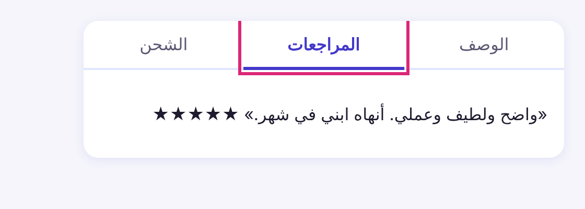
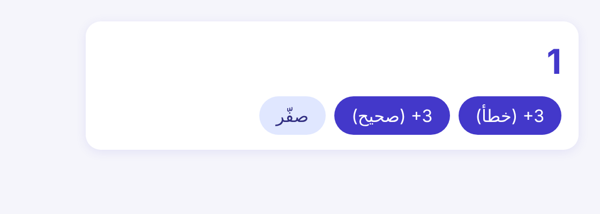
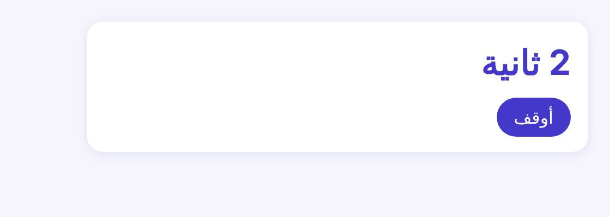
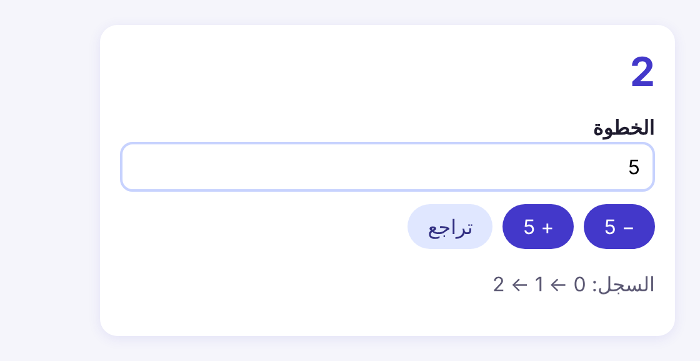
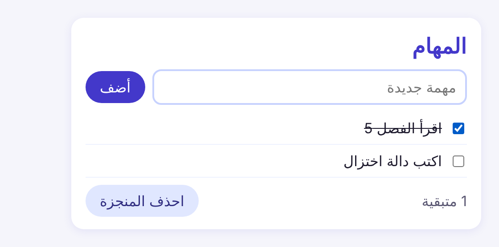
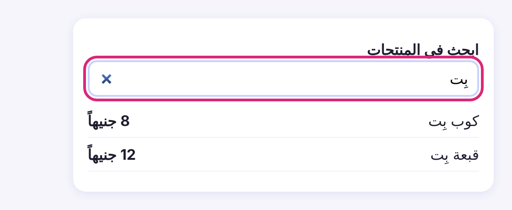
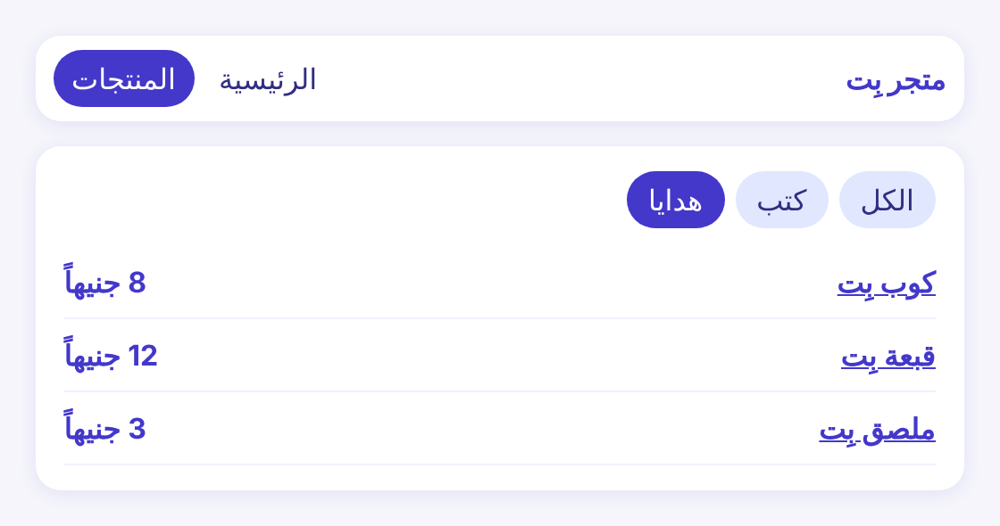
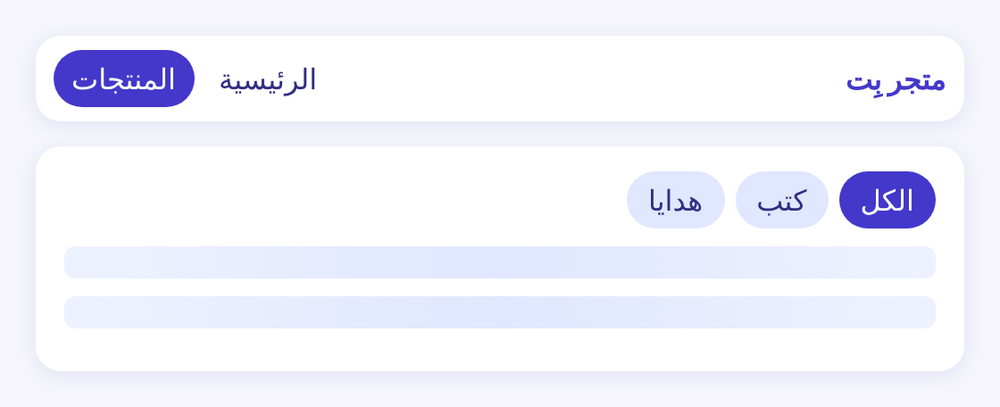
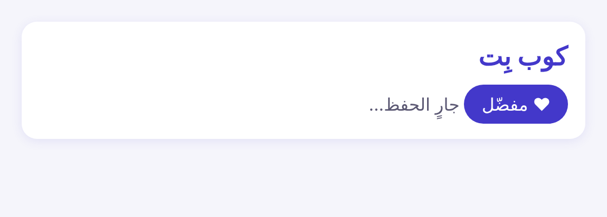
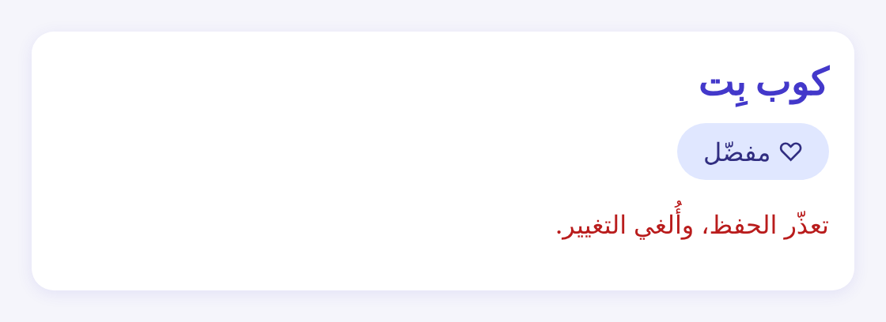

اختُبر الكود في هذا الكتاب على Node.js 22، وكل مثال ومخرجاته منسوخ من ملفات مستودع الكود الخاص بالكتاب.
JavaScript وNode.js وغيرها من الأسماء الواردة في هذا الكتاب علامات تجارية لأصحابها، وتُذكر للتعريف فقط.
ISBN: ———
المحتويات
الجزء 1: اللغة
1JavaScript الحديثة بعمق
2TypeScript في المشاريع الحقيقية
3الوحدات والأدوات وأنظمة البناء
الجزء 2: React
4المكونات والرسم
5الحالة والتأثيرات وتدفق البيانات
6التوجيه وبيانات الخادم
7النماذج والتحقق
8الحالة العامة بلا ألم
الجزء 3: الجودة
9أنظمة التصميم ومكتبات المكونات
10الوصول (WCAG) عملياً
11الاختبار: الوحدات والمكونات ومن الطرف للطرف
12الأداء وCore Web Vitals
13أمان الواجهات
14تعدد اللغات والاتجاه من اليمين
الجزء 4: عمل الخبير
15معمارية الواجهات على نطاق واسع
16الرسم على الخادم بـ Next.js
17مراجعة الكود والتوجيه والقرارات التقنية
18المشروع الختامي: لوحة تحكم للإنتاج
ملحق
حلول التمارين
1
الفصل 1
JavaScript الحديثة بعمق
ستتعلم في هذا الفصل أن
تتوقع متى تُنسخ البيانات ومتى تُشارَك، وتحدّثها دون آثار جانبية
تستخدم الإغلاقات (closures) لتبقي الحالة خاصة
تكتب أصنافاً بحقول خاصة، ولا تفقد this بعد اليوم
تستخدم الأدوات الحديثة: ?. و?? و??= وat وtoSorted وObject.groupBy
تختار بين المصفوفات وMap وSet، وتكتب المولّدات
تشرح ترتيب تنفيذ الكود غير المتزامن، وتجمع الوعود بأمان
تصمم أخطاء تحكي القصة كاملة
تعلمت في الكتاب الأول من JavaScript ما يكفي لبناء تطبيق حقيقي. وأُطر العمل مثل React وVue مكتوبة باللغة نفسها، وأكثر الأخطاء المحيّرة فيها سؤال عن JavaScript في الحقيقة: لماذا تغيّرت هذه القيمة؟ أين ذهب this؟ لماذا نُفّذ هذا السطر أولاً؟ يجيب هذا الفصل عن هذه الأسئلة مرة واحدة وإلى الأبد، وهو الأساس لكل ما بعده في الكتاب.
بِت
أهلاً بعودتك! أنا أيضاً كنت أتدرب. في هذا الكتاب نتوقف عن سؤال «هل يعمل؟» ونبدأ بسؤال «هل سيظل يعمل العام القادم، حين يكبر التطبيق عشر مرات؟». هذا هو سؤال الخبير.
1.1القيم والمراجع
في JavaScript نوعان من القيم. القيم البسيطة (الأرقام والنصوص والقيم المنطقية وnull وundefined وbigint وsymbol) تُنسخ حين تُسندها. أما الكائنات، ومنها المصفوفات والدوال، فلا تُنسخ: المتغير يحمل مرجعاً، أي عنواناً يشير إلى الكائن.
values.js
// القيم البسيطة تُنسخlet a = 10;
let b = a;
b = 20;
console.log(a, b);
// الكائنات مشتركة: اسمان لكائن واحدconst original = { name: "سارة", tags: ["js"] };
const same = original;
same.name = "هدى";
console.log(original.name);
// النشر ينسخ المستوى الأول فقطconst shallow = { ...original };
shallow.tags.push("ts");
console.log(original.tags);
// structuredClone ينسخ كل المستوياتconst deep = structuredClone(original);
deep.tags.push("react");
console.log(original.tags, deep.tags);
same وoriginal اسمان لكائن واحد، فالتغيير بأي منهما يظهر بالآخر.
النشر { ...original } يصنع نسخة سطحية: كائناً خارجياً جديداً، لكن المصفوفة الداخلية ما زالت مشتركة. ولهذا ظهرت "ts" في الأصل.
structuredClone تصنع نسخة عميقة: كل مستوى فيها جديد. وهي مدمجة في المتصفحات وNode.
التحديث دون آثار جانبية
يقرر React وVue كلاهما ما يُعاد رسمه بمقارنة المراجع: فإن كان الكائن هو نفسه، قد يفترضان أن شيئاً لم يتغير. لذلك نادراً ما يغيّر المحترفون البيانات في مكانها، بل يبنون كائناً جديداً يشارك القديم في الأجزاء التي لم تتغير. ويسمى هذا الأسلوب التحديث غير القابل للتغيير (immutable updates):
السلة القديمة ما زالت بكمية 1، والجديدة بكمية 2. والسلة ومصفوفة العناصر كلتاهما كائنان جديدان (false false)، بينما يُعاد استخدام العناصر التي لم تتغير. اقرأ addOne ببطء: انشر الكائن القديم، ثم غيّر ما تغيّر فقط، في كل مستوى في طريقك إلى الداخل.
1.2النطاق والإغلاقات
النطاق (scope) هو المنطقة من الكود التي يوجد فيها اسم ما. والمتغيرات المعرّفة بـ let وconst تعيش في أقرب كتلة { … }. وتستطيع الدالة أن ترى متغيرات النطاقات المحيطة بها، حتى بعد أن تنتهي تلك الدوال الخارجية. والدالة مع المتغيرات التي تتذكرها تسمى إغلاقاً (closure).
closures.js
function makeCounter(start = 0) {
let count = start; // خاص: لا تراه إلا الدوال الثلاثreturn {
up: () => ++count,
down: () => --count,
value: () => count,
};
}
const likes = makeCounter();
const stock = makeCounter(10);
likes.up();
likes.up();
stock.down();
console.log(likes.value(), stock.value());
console.log(likes.count); // undefined: لا طريق إليه من الخارج
الطرفية
2 9
undefined
كل استدعاء لـ makeCounter يصنع count جديداً، فلا يتشارك likes وstock شيئاً. ولا أحد في الخارج يستطيع قراءة count أو إفساده، بل يستخدم الدوال الثلاث فقط. وبهذه الطريقة كانت لـ JavaScript بيانات خاصة قبل أن تأتي الحقول الخاصة في الأصناف بزمن طويل، وبها بالضبط تحفظ خطافات React وcomposables في Vue حالتها.
والإغلاقات تصنع أيضاً أدوات صغيرة قابلة لإعادة الاستخدام. فـ once تغلّف أي دالة لتعمل مرة واحدة فقط، وهذا مفيد للاتصال بخادم أو عرض رسالة ترحيب:
once.js
function once(fn) {
let done = false;
let result;
return (...args) => {
if (!done) {
done = true;
result = fn(...args);
}
return result;
};
}
const connect = once(() => {
console.log("جارٍ الاتصال بالخادم…");
return"connection #1";
});
console.log(connect());
console.log(connect());
الطرفية
جارٍ الاتصال بالخادم…
connection #1
connection #1
لغز الحلقة الشهير
loop.js
for (var i = 1; i <= 3; i++) {
setTimeout(() => console.log("var:", i));
}
for (let j = 1; j <= 3; j++) {
setTimeout(() => console.log("let:", j));
}
الطرفية
var: 4
var: 4
var: 4
let: 1
let: 2
let: 3
نطاق var هو الدالة كلها، فتُغلق المؤقتات الثلاثة على iنفسه، وقيمته 4 حين تعمل. أما let فتصنع j جديداً في كل دورة، فيتذكر كل مؤقت قيمته. وهذا من أسباب أن الكود الحديث لا يستخدم var أبداً.
1.3الأصناف والحقول الخاصة وthis
الصنف (class) قالب لكائنات تتشارك الدوال نفسها. ويمكن للأصناف الحديثة أن تحمل حقولاً خاصة تبدأ أسماؤها بـ #، وأعضاء ثابتة (static) تخص الصنف نفسه، ودوال قراءة (getters) تبدو كخصائص لكنها تشغّل كوداً:
classes.js
class Account {
#balance = 0; // حقل خاص: لا يُرى خارج الصنفstatic count = 0;
constructor(owner) {
this.owner = owner;
Account.count++;
}
get balance() {
returnthis.#balance;
}
deposit(amount) {
if (amount <= 0) thrownew RangeError("يجب أن يكون المبلغ موجباً");
this.#balance += amount;
returnthis; // إرجاع this يسمح بسلسلة الاستدعاءات
}
}
class SavingsAccount extends Account {
addInterest(rate) {
returnthis.deposit(Math.round(this.balance * rate));
}
}
const acc = new SavingsAccount("سارة");
acc.deposit(1000).deposit(500).addInterest(0.1);
console.log(acc.owner, acc.balance, Account.count);
console.log(acc instanceof Account);
try {
acc.deposit(-5);
} catch (error) {
console.log(error.name + ":", error.message);
}
الطرفية
سارة 1650 1
true
RangeError: يجب أن يكون المبلغ موجباً
#balance لا يُقرأ ولا يتغير خارج الصنف، ولا حتى بالخطأ. والطريق الوحيد إليه deposit، وهي تفحص المبلغ.
get balance() تسمح بقراءة acc.balance دون القدرة على تعيينها.
extends تبني صنفاً جديداً فوق آخر، فلـ SavingsAccount كل ما لـ Account وزيادة addInterest.
رمي RangeError عند معامل خاطئ أفضل من تجاهله بصمت: فيظهر الخطأ حيث يبدأ.
أين ذهب this؟
داخل الدالة العادية، this هو الكائن الذي قبل النقطة لحظة الاستدعاء. ففي timer.tick() قبل النقطة timer. لكن حين تمرر timer.tick إلى مكان آخر، كدالة رد أو معالج حدث، تسافر الدالة وحدها ويبقى الكائن خلفها:
ضاع this: Cannot read properties of undefined (reading 'seconds')
3
الدوال السهمية ليس لها this خاص بها، بل تستخدم this المكان الذي كُتبت فيه. ولهذا تعمل الحلول الثلاثة، ولهذا سترى الدوال السهمية في كل مكان في معالجات الأحداث.
بِت
قاعدة توفر ساعات: إن كانت الدالة ستُمرَّر إلى مكان آخر (حدث، أو مؤقت، أو دالة رد)، فاستدعها داخل دالة سهمية: () => obj.method(). وعندها لا يضيع this أبداً.
1.4الأدوات الحديثة
كل عام تكسب JavaScript مزايا صغيرة تزيل أنواعاً كاملة من الأخطاء. وهذه ما ستستخدمه كل يوم:
modern.js
const user = { name: "عمر", address: null, settings: { theme: "" } };
// ?. تتوقف عند null أو undefined بدل الانهيار
console.log(user.address?.city);
console.log(user.address?.city ?? "غير معروف");
// || تستبدل كل قيمة كاذبة، و?? تستبدل null وundefined فقط
console.log(user.settings.theme || "light", user.settings.theme ?? "light");
// ??= تُسند فقط حين تكون القيمة ناقصة
user.settings.fontSize ??= 16;
console.log(user.settings);
const scores = [72, 95, 88, 61];
console.log(scores.at(-1), scores.findLast((s) => s > 80));
console.log(scores.toSorted((a, b) => b - a), scores); // toSorted تُرجع نسخة: يبقى الأصل بترتيبه
undefined إن كانت a هي null أو undefined، وإلا a.b
بيانات من خادم قد تكون ناقصة
a ?? b
b فقط إن كانت a هي null أو undefined
قيم افتراضية تحافظ على 0 و""
a ??= b
اجعل a تساوي b فقط إن كانت ناقصة
ملء الإعدادات الافتراضية
list.at(-1)
العنصر الأخير
بدل list[list.length - 1]
toSorted وtoReversed وwith
مثل sort وأخواتها، لكنها تُرجع نسخة
التحديث غير القابل للتغيير
انظر جيداً إلى السطر الثالث من المخرجات: || رمت النص الفارغ واستخدمت "light"، بينما أبقته ??. فإن كان النص الفارغ أو الصفر قيمة حقيقية في بياناتك، فاستخدم ??.
تجميع البيانات وإعادة تشكيلها
Object.groupBy توزّع القائمة على مجموعات في سطر واحد، وObject.entries مع Object.fromEntries تتيحان تحويل الكائن كأنه مصفوفة:
وهذا شكل معظم كود لوحات التحكم: اجمع السجلات الخام، ثم اختصر كل مجموعة إلى رقم.
1.5المجموعات والمولّدات
الكائن مناسب لمجموعة ثابتة من الحقول المسماة. أما المجموعة التي تكبر وتصغر فلها في JavaScript أداتان أفضل. Map تحفظ أزواج مفتاح وقيمة، بمفاتيح من أي نوع، بترتيب إضافتها. وSet تحفظ كل قيمة مرة واحدة:
collections.js
// Map: مفاتيح من أي نوع، بترتيب الإضافةconst visits = new Map();
for (const page of ["/home", "/shop", "/home", "/cart", "/home"]) {
visits.set(page, (visits.get(page) ?? 0) + 1);
}
console.log(visits);
console.log([...visits].toSorted((a, b) => b[1] - a[1])[0]);
// Set: كل قيمة مرة واحدةconst tags = new Set(["js", "css", "js", "html", "css"]);
console.log(tags.size, tags.has("css"), [...tags]);
استخدم Map حين تبحث بمفتاح يأتي من البيانات (معرّف، أو رابط، أو كائن)، واستخدم Set لإزالة التكرار أو للسؤال السريع «هل رأيت هذا من قبل؟». وكلتاهما أسرع كثيراً من البحث في مصفوفة حين تكبر المجموعة.
المولّدات: قيم عند الطلب
المولّد (generator) دالة تُكتب بـ function* وتستطيع أن تتوقف. فكل yield تسلّم قيمة واحدة وتنتظر حتى تُطلب التالية. وكل ما يعمل مع for…of أو النشر يستطيع استخدامه:
generators.js
function* range(from, to, step = 1) {
for (let n = from; n <= to; n += step) {
yield n; // توقف هنا وسلّم n للمستدعي
}
}
console.log([...range(1, 10, 3)]);
// مولّد يقسم القائمة إلى صفحاتfunction* pages(items, size) {
for (let i = 0; i < items.length; i += size) {
yield items.slice(i, i + size);
}
}
const letters = "ABCDEFG".split("");
for (const page of pages(letters, 3)) {
console.log(page.join(" "));
}
الطرفية
[ 1, 4, 7, 10 ]
A B C
D E F
G
وتتألق المولّدات حين تكون القيم مكلفة أو بلا نهاية: قراءة ملف كبير سطراً سطراً، أو تحميل صفحة بعد صفحة من واجهة برمجية ما دام المستخدم يمرّر.
1.6حلقة الأحداث
تشغّل JavaScript كودك على خيط واحد، قطعة بعد قطعة. والعمل الذي يجب أن ينتظر (المؤقتات، وردود الشبكة، والنقرات) يوضع في طابور، وحلقة الأحداث (event loop) تختار القطعة التالية حين تنتهي الحالية. وهناك طابوران، والفرق بينهما يفسّر كثيراً من الأخطاء المفاجئة:
event-loop.js
console.log("1 الكود المتزامن يعمل أولاً");
setTimeout(() => console.log("5 مؤقت: مهمة، بعد كل المهام الدقيقة"), 0);
Promise.resolve().then(() => console.log("3 رد وعد: مهمة دقيقة"));
queueMicrotask(() => console.log("4 مهمة دقيقة أخرى، بالترتيب"));
console.log("2 ما زال متزامناً");
الطرفية
1 الكود المتزامن يعمل أولاً
2 ما زال متزامناً
3 رد وعد: مهمة دقيقة
4 مهمة دقيقة أخرى، بالترتيب
5 مؤقت: مهمة، بعد كل المهام الدقيقة
يعمل الكود المتزامن كله أولاً، من الأعلى إلى الأسفل.
ثم تعمل كل المهام الدقيقة (microtasks): ردود الوعود وqueueMicrotask. والمهمة الدقيقة التي تضيف مهام دقيقة أخرى تُبقي الحلقة مشغولة حتى يفرغ الطابور.
وبعدها فقط تعمل المهمة (task) التالية: مؤقت، أو حدث شبكة، أو نقرة.
القاعدة العملية: الكود بعد await يعمل لاحقاً دائماً، حتى لو كان الوعد محققاً سلفاً. والحلقة المتزامنة الطويلة تعطّل كل شيء، بما فيه النقرات ورسم الصفحة، ولهذا يُقسَّم العمل الثقيل إلى قطع صغيرة أو يُنقل إلى Web Worker.
جمع الوعود
عرفت في الكتاب الأول Promise.all، التي تفشل حين يفشل أي وعد. والشاشات الحقيقية تحتاج تحكماً أكثر:
promises.mjs
const wait = (ms, value, fail = false) =>
new Promise((resolve, reject) =>
setTimeout(() => (fail ? reject(new Error(value)) : resolve(value)), ms),
);
const results = await Promise.allSettled([
wait(30, "الملف الشخصي"),
wait(10, "فشلت الطلبات", true),
wait(20, "الرسائل"),
]);
for (const r of results) {
console.log(r.status, r.value ?? r.reason.message);
}
// any: أول من ينجحconst fastest = await Promise.any([wait(40, "النسخة أ"), wait(15, "النسخة ب")]);
console.log("الأسرع:", fastest);
// race: أول من ينتهي، نجاحاً أو فشلاًconst timeout = (ms) => wait(ms, "انتهت المهلة بعد 50 ملي ثانية", true);
try {
await Promise.race([wait(100, "رد بطيء"), timeout(50)]);
} catch (error) {
console.log(error.message);
}
الطرفية
fulfilled الملف الشخصي
rejected فشلت الطلبات
fulfilled الرسائل
الأسرع: النسخة ب
انتهت المهلة بعد 50 ملي ثانية
الدالة
تتحقق حين
استخدمها لـ
Promise.all
تنجح كلها (وتفشل مع أول فشل)
بيانات لا تعمل الشاشة دونها
Promise.allSettled
تنتهي كلها، مع حالة كل منها
لوحات التحكم: اعرض ما تحمّل، وعلّم ما فشل
Promise.any
ينجح أولها
عدة خوادم بالبيانات نفسها
Promise.race
ينتهي أولها، نجاحاً أو فشلاً
المهلة الزمنية
ينتهي اسم الملف بـ .mjs، وهذا يخبر Node بأنه وحدة ES (ES module). والوحدات تسمح بـ await في المستوى الأعلى، خارج أي دالة. ويشرح الفصل 3 الوحدات كما يجب، ويكفي الامتداد الآن.
1.7أخطاء تحكي القصة كاملة
رسالة الخطأ ملاحظة للشخص الذي سيصحح كودك في الثانية فجراً، وكثيراً ما يكون هذا الشخص أنت. وميزتان حديثتان تجعلان هذه الملاحظات أفضل بكثير: أصناف أخطائك الخاصة، التي تُميَّز بـ instanceof، وخيار cause، الذي يحفظ الخطأ الأصلي حين تضيف سياقاً:
تعذّر تحميل الملف الشخصي
السبب: NotFoundError - المستخدم #7 غير موجود
true
الرسالة العليا تقول ماذا كان المستخدم يحاول، والسبب يقول لماذا فشل. وخدمات تتبع الأخطاء وConsole المتصفح تعرض السلسلة كلها. ولا تكتب أبداً catch (error) {} فارغة: فالخطأ المبتلع علّة مختبئة.
أخطاء شائعة
الخطأ
ما يحدث
الحل
تغيير الحالة في مكانها: cart.items.push(x)
لا تتحدث الشاشة، أو تتحدث في المكان الخطأ
ابنِ كائناً جديداً بالنشر
النسخ بالنشر ثم تعديل مصفوفة داخلية
يتغير الأصل أيضاً
انسخ كل مستوى تغيّره، أو استخدم structuredClone
تمرير obj.method دالة رد
this يصبح undefined
() => obj.method()
value || default مع الأرقام
يُستبدل 0 بالقيمة الافتراضية
value ?? default
Promise.all لبيانات اختيارية
فشل واحد يخفي كل الباقي
Promise.allSettled
catch فارغة
تختفي الأخطاء بصمت
عالجه، أو ارمِه من جديد مع cause
الخلاصة
القيم البسيطة تُنسخ، والكائنات تُشارَك بالمرجع. النشر ينسخ مستوى واحداً، وstructuredClone كل المستويات.
التحديث غير القابل للتغيير يبني كائنات جديدة ويعيد استخدام ما لم يتغير، وأُطر العمل تعتمد عليه.
الإغلاق دالة ومعها المتغيرات التي تتذكرها: أبسط طريقة لإبقاء الحالة خاصة.
للأصناف حقول خاصة (#) ودوال قراءة وأعضاء static. وthis هو الكائن الذي قبل النقطة لحظة الاستدعاء، والدوال السهمية تحفظ this الخارجي.
استخدم Map للبحث بمفتاح، وSet للقيم الفريدة، والمولّدات للقيم عند الطلب.
حلقة الأحداث تشغّل الكود المتزامن، ثم كل المهام الدقيقة، ثم المهمة التالية.
اختر all أو allSettled أو any أو race حسب حاجة الشاشة. وأعطِ الأخطاء صنفاً وcause.
إجابات «اختبر نفسك»: 1. صحيحة: النشر ينسخ المستوى الأول فقط، فكلاهما يشير إلى القائمة نفسها. 2. لأن count موجود داخل الإغلاق فقط، والعالم الخارجي يأخذ دوالّ لا المتغير. 3. 1 2 3 مرتين، مرة مع «var:» ومرة مع «let:».
مشاريع تطبيقية
كل مشروع يبني أداة صغيرة قابلة لإعادة الاستخدام، من النوع الذي تجده داخل المكتبات الحقيقية. اكتبه أولاً بطريقتك، وشغّله، وقارن نتيجتك بالنتيجة أدناه، وبعدها فقط انظر إلى الحل في مستودع الكود.
مشروع 1.1 · سهل
أداة التذكّر memoize
اكتب memoize(fn)، التي تُرجع نسخة أسرع من أي دالة بمعامل واحد، بأن تتذكر إجاباتها.
طبّق التذكّر على دالة فيبوناتشي التعاودية. يجب أن تستدعي النسخة المتذكّرة من نفسها، وإلا فلن تُستخدم الذاكرة أبداً.
تلميح: طبّق التذكّر على الدوال النقية فقط: الدوال التي تعتمد إجابتها على معاملاتها وحدها. فالدالة التي تقرأ الساعة أو خادماً ستُرجع إجابات قديمة إلى الأبد.
أنشئ class Emitter بحقل خاص #listeners = new Map(). كل مفتاح اسم حدث، وكل قيمة Set من الدوال.
on(event, fn) تضيف الدالة، وتنشئ الـ Set في المرة الأولى. واجعلها تُرجع () => this.off(event, fn).
off(event, fn) تزيلها. واستخدم ?. ليكون الحذف من حدث مجهول بلا ضرر.
emit(event, ...args) تستدعي كل مستمع بالمعاملات. مرّ على نسخة ([...set])، لأن المستمع قد يزيل نفسه أثناء المرور.
once(event, fn) تستمع بغلاف يوقف نفسه قبل أن يستدعي fn.
تلميح: إرجاع دالة «الإيقاف» من on نمط ستقابله مرة أخرى: فـ useEffect في React وwatch في Vue كلاهما يستخدمه. من يبدأ الاستماع يملك طريقة إيقافه.
يجب أن تبدو نتيجتك هكذا:
الطرفية
السجل: الطلب 101
أول طلب اليوم: 101
السجل: الطلب 102
لا مستمعين بعد الآن.
مشروع 1.3 · تحدٍّ
إعادة المحاولة بانتظار متضاعف
الشبكات تتعطل للحظة طوال الوقت. اكتب retry(fn, options)، التي تعيد محاولة دالة غير متزامنة، وتنتظر أطول في كل مرة، وتستسلم بخطأ واضح.
ستتدرب على:async/await داخل حلقة، والخيارات الافتراضية بالتفكيك، و2 ** n، والأخطاء مع cause.
اكتب الدالة المساعدة wait(ms) التي تُرجع وعداً.
أعطِ retry معاملاً ثانياً { retries = 3, delay = 10 } = {}، لتعمل دون أي خيارات.
مرّ على المحاولات. وداخل try اكتب return await fn(attempt): وawait هنا ضرورية، وإلا فلن ترى catch الفشل أبداً.
في catch استسلم حين تنفد المحاولات، برمي خطأ جديد مع { cause: error }. وإلا فانتظر delay * 2 ** (attempt - 1) وكرر.
اختبرها بواجهة وهمية flaky(n) تفشل n مرة ثم تنجح. جرّب واحدة تتعافى وأخرى لا تتعافى أبداً.
تلميح: في الإنتاج أضف قليلاً من العشوائية إلى الانتظار، كي لا تعيد ألف جوال فقدت الشبكة معاً المحاولة في الملي ثانية نفسها. ولا تُعِد أبداً عمليات لا يصح تكرارها، كخصم مبلغ من بطاقة، إلا إن كان الخادم يدعم ذلك.
يجب أن تبدو نتيجتك هكذا:
الطرفية
واجهة تفشل مرتين:
المحاولة 1 فشلت، انتظار 10 ms
المحاولة 2 فشلت، انتظار 20 ms
OK (في المحاولة 3)
واجهة تفشل خمس مرات:
المحاولة 1 فشلت، انتظار 10 ms
المحاولة 2 فشلت، انتظار 20 ms
استسلمت بعد 3 محاولات - خطأ في الشبكة
تمارين
سهل اكتب removeItem(cart, id) بأسلوب immutable.js، وأثبت بـ === أن السلة الأصلية لم تتغير.
سهل باستخدام Object.groupBy جمّع الكلمات ["apple", "avocado", "banana", "blueberry", "cherry"] حسب حرفها الأول.
متوسط أضف إلى Account دالة withdraw(amount) ترمي خطأً خاصاً InsufficientFundsError حين يكون الرصيد غير كافٍ، واختبر الحالتين.
متوسط دون أن تشغّله، اكتب ترتيب مخرجات: setTimeout(() => log("A")); Promise.resolve().then(() => log("B")); log("C");. ثم شغّله لتتحقق.
تحدٍّ اكتب مولّداً take(iterable, n) يعطي أول n قيمة فقط من أي شيء قابل للتكرار، واستخدمه مع مولّد لا ينتهي للأرقام الزوجية.
حلول التمارين في آخر الكتاب، وفي مستودع الكود الخاص بالكتاب.
في الفصل 2
رأيت كم من الأمور قد يسوء حين لا تكون القيمة كما توقعت. وTypeScript تلتقط معظم هذه الأخطاء قبل أن تشغّل الكود أصلاً. في الفصل التالي ستضيف الأنواع إلى كود حقيقي، وتصف بيانات قد تكون في عدة حالات، وتدع المحرر يجد الأخطاء نيابة عنك.
2
الفصل 2
TypeScript في المشاريع الحقيقية
ستتعلم في هذا الفصل أن
تشرح ما تضيفه TypeScript إلى JavaScript، وما لا تضيفه
تدع TypeScript تستنتج الأنواع، وتكتبها حيث يهم ذلك
تصف الكائنات بخصائص اختيارية وأخرى للقراءة فقط
تضيّق الأنواع الاتحادية، وتصف حالات الشاشة بالاتحادات المميَّزة
تكتب دوالّ وأنواعاً عامة (generics)
تبني أنواعاً جديدة من القديمة بالأنواع المساعدة وas const وsatisfies
تفحص البيانات التي تصل من خارج برنامجك
في الفصل السابق انتهت أمثلة كثيرة بخطأ لم يظهر إلا حين عمل الكود: خاصية ناقصة، أو نوع خاطئ، أو قيمة undefined. وفي تطبيق كبير تظهر هذه الأخطاء أمام المستخدمين. وTypeScript هي JavaScript مكتوبة فوقها الأنواع، ومعها أداة اسمها المترجم (compiler) تقرأ هذه الأنواع وتجد تلك الأخطاء وأنت تكتب. ويستخدمها اليوم كل فريق واجهات محترف تقريباً.
بِت
تخيّل الأنواع ملصقات على الصناديق. إن كُتب على الصندوق «أرقام فقط» فلن يضع فيه أحد كلمة بالخطأ، وسيعرف كل من يفتحه ما فيه. وTypeScript تفحص الملصقات نيابة عنك، طوال اليوم، ومجاناً.
2.1أخطاء تُكتشف قبل التشغيل
هذا ملف قصير فيه ثلاثة أخطاء. ستشغّله JavaScript ثم تفشل في مكان ما لاحقاً، أو الأسوأ أن تحسب NaN بصمت. أما مترجم TypeScript، tsc، فيرفضه فوراً ويقول أين ولماذا بالضبط:
$ npx tsc --noEmit why.ts
why.ts(4,34): error TS2551: Property 'quantitiy' does not exist on type 'Product'. Did you mean 'quantity'?
why.ts(7,39): error TS2322: Type 'string' is not assignable to type 'number'.
why.ts(9,11): error TS2741: Property 'quantity' is missing in type '{ name: string; price: number; }' but required in type 'Product'.
كل رسالة تذكر الملف، والسطر والعمود، ورمز الخطأ، وجملة شارحة. والأولى تقترح الإصلاح أيضاً. ويعرض محررك الرسائل نفسها خطوطاً حمراء تحت الكود وأنت تكتب، فلا تحتاج غالباً إلى تشغيل البناء لتراها.
حقيقتان تستحقان المعرفة من البداية:
الأنواع تختفي حين يعمل الكود. المتصفحات وNode تشغّل JavaScript العادية، وتُحذف الأنواع أولاً. بل يستطيع Node تشغيل ملف .ts مباشرة بحذف أنواعه، وبهذا شُغّل كل مثال في هذا الفصل. فالأنواع لا تكلّف شيئاً وقت التشغيل، لكنها أيضاً لا تفحص شيئاً وقت التشغيل. والبيانات القادمة من خادم يجب أن تُفحص (القسم 2.6).
TypeScript هي JavaScript. كل ملف JavaScript تقريباً ملف TypeScript صالح. فتستطيع إضافة الأنواع تدريجياً، ملفاً بعد ملف.
2.2كتابة الأنواع واستنتاجها
تكتب النوع بعد نقطتين: name: string. لكنك تكتب أنواعاً أقل بكثير مما تتوقع، لأن TypeScript تستنتجها من القيم:
basics.ts
// مستنتجة: تعرف TypeScript هذه الأنواع دون أن تُخبَرlet city = "القاهرة";
const year = 2026;
const scores = [72, 95, 88];
// اكتب أنواع معاملات الدالة ونوع ما تُرجعهfunction average(values: number[]): number {
return values.reduce((sum, v) => sum + v, 0) / values.length;
}
function greet(name: string, title?: string): string {
return title ? `${title} ${name}` : name;
}
console.log(city, year, average(scores));
console.log(greet("سارة"), "|", greet("سارة", "د."));
الطرفية
القاهرة 2026 85
سارة | د. سارة
استُنتج city نصاً string، وyear الرقم 2026 بعينه (لأنه const)، وscores مصفوفة أرقام number[].
معاملات الدالة لا تُستنتج، فتكتب أنواعها. وهناك تؤدي الأنواع معظم عملها: فهي العقد بين الدالة وكل من يستدعيها.
كتابة نوع ما تُرجعه الدالة (: number) اختيارية، لكنها عادة جيدة للدوال المصدَّرة: فيُبلَّغ عن الخطأ داخل الدالة هناك، لا عند كل مستدعٍ.
وصف الكائنات
نوع الكائن يسرد خصائصه. ضع ? على الخاصية التي قد تغيب، وreadonly على التي يجب ألا تتغير أبداً بعد إنشاء الكائن:
objects.ts
type User = {
readonly id: number;
name: string;
email: string;
phone?: string; // اختياري: نص أو undefined
roles: readonly string[];
};
const user: User = { id: 7, name: "سارة", email: "sara@example.com", roles: ["admin"] };
user.name = "هدى";
user.id = 8;
user.roles.push("editor");
console.log(user.phone.length);
الطرفية
$ npx tsc --noEmit objects.ts
objects.ts(12,6): error TS2540: Cannot assign to 'id' because it is a read-only property.
objects.ts(13,12): error TS2339: Property 'push' does not exist on type 'readonly string[]'.
objects.ts(14,13): error TS18048: 'user.phone' is possibly 'undefined'.
تغيير name مسموح، وتغيير id ممنوع. ومصفوفة الأدوار من نوع readonly string[]، فليس فيها push أصلاً. ولاحظ المترجم أن phone قد تكون ناقصة: فيجب أن يفحصها الكود أولاً، مثلاً بـ user.phone?.length.
سترى أيضاً interface User { … } بدل type User = { … }. وهما متقاربان جداً لوصف أشكال الكائنات. ويستخدم هذا الكتاب type في كل مكان، لأنها تعمل أيضاً مع الاتحادات التي تأتي الآن. اختر أسلوباً واحداً لكل مشروع والتزم به.
2.3الاتحادات والتضييق
النوع الاتحادي (union)، ويُكتب بـ |، يعني «واحد من هذه». وداخل الدالة كل فحص تكتبه يضيّق النوع: فبعد typeof value === "string" تعرف TypeScript أنه نص، وفي باقي الدالة تعرف أنه ليس نصاً:
narrowing.ts
function formatPrice(value: number | string | null): string {
if (value === null) return"مجاناً";
if (typeof value === "string") return value; // هنا value نصreturn`${value.toFixed(2)} جنيهاً`; // وهنا لا يمكن أن تكون إلا رقماً
}
type Cat = { kind: "cat"; meows: boolean };
type Dog = { kind: "dog"; barks: boolean };
function describe(pet: Cat | Dog): string {
if ("meows"in pet) return pet.meows ? "قطة ثرثارة" : "قطة هادئة";
return pet.barks ? "كلب صاخب" : "كلب هادئ";
}
console.log(formatPrice(19.5), "|", formatPrice("اسألنا"), "|", formatPrice(null));
console.log(describe({ kind: "cat", meows: true }), "|", describe({ kind: "dog", barks: false }));
تفهم TypeScript كل الفحوص المعتادة: === null، وtypeof، وArray.isArray، وinstanceof، و"key" in object. فلا تحتاج صيغة خاصة: تكتب JavaScript عادية، والأنواع تتبع منطقك.
الاتحادات المميَّزة: نوع واحد لكل حالات الشاشة
كل شاشة تحمّل بيانات قد تكون في أربع حالات: لم تبدأ بعد، أو تحمّل، أو معها البيانات، أو فشلت. وكثيراً ما يستخدم المبتدئون ثلاثة متغيرات منفصلة، loading وdata وerror، ثم يقابلون تركيبات مستحيلة، كخطأ وبيانات في الوقت نفسه. والاتحاد المميَّز (discriminated union) يجعل هذه التركيبات مستحيلة: كل حالة كائن فيه حقل مشترك status، والحالة الصحيحة وحدها فيها data أو message:
remote.ts
type RemoteData<T> =
| { status: "idle" }
| { status: "loading" }
| { status: "success"; data: T }
| { status: "error"; message: string };
function assertNever(value: never): never {
thrownew Error("حالة غير متوقعة: " + JSON.stringify(value));
}
function render(state: RemoteData<string[]>): string {
switch (state.status) {
case"idle":
return"اضغط الزر للتحميل";
case"loading":
return"جارٍ التحميل…";
case"success":
return`${state.data.length} منتجات: ${state.data.join(", ")}`; // data موجودة في هذه الحالة فقطcase"error":
return`تعذّر التحميل: ${state.message}`;
default:
return assertNever(state); // إن نقصت حالة فلن تكون state من نوع never هنا، ويفشل البناء
}
}
const states: RemoteData<string[]>[] = [
{ status: "idle" },
{ status: "loading" },
{ status: "success", data: ["كتاب", "كوب"] },
{ status: "error", message: "أنت غير متصل" },
];
for (const state of states) console.log(render(state));
داخل case "success" تعرف TypeScript أن state.data موجودة، وقراءتها في أي مكان آخر خطأ. والفرع default هو الجزء الذكي: فإن عولجت كل الحالات صار نوع state هناك never، أي «هذا لا يمكن أن يحدث». وانظر الآن ماذا يحدث حين يحذف زميل حالة "error":
الطرفية
$ npx tsc --noEmit remote-missing.ts
remote-missing.ts(20,26): error TS2345: Argument of type '{ status: "error"; message: string; }' is not assignable to parameter of type 'never'.
يفشل البناء ويسمّي الحالة المنسية. ويسمى هذا النمط الفحص الشامل (exhaustive check)، وهو يحوّل «نسينا عرض رسالة الخطأ» من بلاغ عن علّة إلى خطأ في البناء. وستستخدمه في كل فصول إطار العمل في هذا الكتاب.
2.4الأنواع العامة (Generics)
بعض الدوال تعمل بالطريقة نفسها مع أي نوع: «أعطني أول عنصر في القائمة» لا يهمها أكانت القائمة منتجات أم مستخدمين. والدالة العامة (generic) لها معامل نوع يُكتب بين قوسين زاويين، ويعني «أي نوع يستخدمه المستدعي»:
generics.ts
function first<T>(list: readonly T[]): T | undefined {
return list[0];
}
function byId<T extends { id: number }>(list: readonly T[]): Map<number, T> {
returnnew Map(list.map((item) => [item.id, item]));
}
type Result<T> = { ok: true; value: T } | { ok: false; error: string };
function parseAge(text: string): Result<number> {
const age = Number(text);
if (!Number.isInteger(age) || age < 0) return { ok: false, error: `"${text}" ليس عمراً` };
return { ok: true, value: age };
}
const products = [
{ id: 1, name: "كتاب", price: 25 },
{ id: 2, name: "كوب", price: 8 },
];
console.log(first(products)?.name, first<number>([]));
console.log(byId(products).get(2)?.price);
for (const text of ["34", "-2", "abc"]) {
const result = parseAge(text);
console.log(result.ok ? `العمر: ${result.value}` : result.error);
}
الطرفية
كتاب undefined
8
العمر: 34
"-2" ليس عمراً
"abc" ليس عمراً
first<T> تُرجع T | undefined. فحين تُستدعى بمنتجات تُرجع منتجاً، فيُسمح بـ .name. وحين تُستدعى بقائمة فارغة تجبرك undefined على معالجة الحالة الناقصة.
T extends { id: number } قيد: تقبل byId أي كائنات ما دام فيها id رقمي.
Result<T>نوع عام: نجاح بقيمة، أو فشل برسالة. وهو اتحاد مميَّز على ok، فيجب على المستدعي الفحص قبل استخدام القيمة. وتُرجع فرق كثيرة نتائج كهذه للفشل المتوقع، كإدخال مستخدم خاطئ، وتُبقي الاستثناءات للمفاجآت الحقيقية.
ستستخدم في الغالب أنواعاً عامة كتبها غيرك: Array<T> وMap<K, V> وPromise<T>، وكل خطافات أُطر العمل ومخازنها. وتستحق كتابة نوعك العام حين تحتاج الدالة دونه إلى any.
2.5أنواع من أنواع
في التطبيق الحقيقي نوع Product واحد وأشكال كثيرة منه: الحقول التي يغيّرها النموذج، والتي تعرضها البطاقة، والتي يحتاجها المنتج الجديد. وكتابة كل منها باليد تعني تحديث خمسة أنواع حين يكسب المنتج حقلاً. والأنواع المساعدة (utility types) تبنيها من الأصل بدلاً من ذلك:
utility.ts
type Product = { id: number; name: string; price: number; stock: number };
// أنواع جديدة مصنوعة من نوع موجودtype ProductUpdate = Partial<Omit<Product, "id">>;
type ProductCard = Pick<Product, "name" | "price">;
function update(product: Product, changes: ProductUpdate): Product {
return { ...product, ...changes };
}
const mug: Product = { id: 2, name: "كوب", price: 8, stock: 40 };
const card: ProductCard = { name: mug.name, price: mug.price };
console.log(update(mug, { price: 7 }), card);
// قائمة قيم واحدة، والنوع يأتي منهاconst ROLES = ["viewer", "editor", "admin"] as const;
type Role = (typeof ROLES)[number];
const labels = {
viewer: "يشاهد",
editor: "يعدّل",
admin: "تحكم كامل",
} satisfies Record<Role, string>;
const role: Role = "editor";
console.log(ROLES.length, labels[role]);
والنصف الثاني من المثال نمط ستستخدمه كثيراً. as const تطلب من TypeScript الاحتفاظ بقيم المصفوفة بعينها، و(typeof ROLES)[number] تحوّلها إلى الاتحاد "viewer" | "editor" | "admin". فتُكتب قائمة الأدوار مرة واحدة، ولا يمكن أن يبتعد النوع عنها. وأخيراً تفحص satisfies أن في labels تسمية لكل دور، دون أن تغيّر نوع labels نفسها. فإن نسيت دوراً أو أخطأت في كتابته فشل البناء.
2.6الحدود: unknown وحراس الأنواع
الأنواع تصف كودك أنت. أما البيانات القادمة من الخارج، من خادم أو من localStorage أو من ملف، فلا أنواع لها حتى تفحصها. وتقدم TypeScript طريقتين لقول «لا أعرف ما هذا»:
any توقف الفحص. كل شيء مقبول، وتعود الأخطاء. تجنّبها.
unknown تعني «قد يكون أي شيء، فيجب أن تفحص قبل أن تستخدم». وهذا النوع الصادق للبيانات الخارجية.
حارس النوع (type guard) دالة تفحص القيمة وقت التشغيل وتخبر TypeScript بالنتيجة. ونوع ما تُرجعه، value is User، هو الوعد: «إن أرجعت true فهي User»:
boundary.ts
type User = { id: number; name: string };
// حارس نوع: إن أرجع true عاملت TypeScript القيمة كـ Userfunction isUser(value: unknown): value is User {
return (
typeof value === "object" &&
value !== null &&
"id"in value &&
typeof value.id === "number" &&
"name"in value &&
typeof value.name === "string"
);
}
function parseUser(json: string): User {
const data: unknown = JSON.parse(json);
if (!isUser(data)) thrownew TypeError("أرسل الخادم مستخدماً بشكل خاطئ");
return data;
}
console.log(parseUser('{"id": 1, "name": "سارة"}').name);
try {
parseUser('{"id": "1", "fullName": "سارة"}');
} catch (error) {
console.log((error as Error).message);
}
الطرفية
سارة
أرسل الخادم مستخدماً بشكل خاطئ
الرد الثاني من الخادم بدا صحيحاً تقريباً، لكن id فيه نص، وfullName بدل name. ودون الحارس كان الخطأ سيظهر في مكان بعيد، اسماً فارغاً على شاشة ما. ومعه يتوقف البرنامج عند الباب برسالة واضحة. وكتابة الحراس باليد تطول، وفي فصل النماذج ستستخدم مكتبة تكتبها من مخطط (schema).
2.7إعداد صارم للمشاريع الحقيقية
للمترجم خيارات كثيرة. والمشاريع الجديدة تشغّل strict، التي تفعّل كل الفحوص المهمة، وخياراً آخر تتركه strict، هو noUncheckedIndexedAccess. فهو يذكّرك بأن البحث في كائن أو مصفوفة قد لا يجد شيئاً:
$ npx tsc --noEmit index.ts
index.ts(5,13): error TS18048: 'cap' is possibly 'undefined'.
index.ts(6,13): error TS2532: Object is possibly 'undefined'.
دون هذا الخيار كان السطران سيُبنيان ثم ينهاران. وفي المشروع تُكتب هذه الإعدادات في tsconfig.json، الذي ستنشئه مع أدوات البناء في الفصل التالي. وهذه الإعدادات المستخدمة لكل مثال في هذا الكتاب:
تضيف TypeScript الأنواع إلى JavaScript، ويفحصها المترجم قبل أن يعمل الكود، ثم تُحذف.
دع TypeScript تستنتج معظم الأنواع، واكتب أنواع معاملات الدوال، وأنواع ما تُرجعه الدوال المصدَّرة.
لأنواع الكائنات خصائص اختيارية (?) وأخرى للقراءة فقط.
الاتحادات (|) تُضيَّق بالفحوص العادية. والاتحاد المميَّز مع فحص شامل بـ never يصف كل حالات الشاشة بأمان.
الأنواع العامة تكتب دالة أو نوعاً واحداً لأنواع كثيرة، والقيود تحدد المسموح.
الأنواع المساعدة وas const وsatisfies تبني الأنواع من مصدر حقيقة واحد.
البيانات الخارجية unknown حتى يفحصها حارس نوع. وas لا تفحص شيئاً.
استخدم strict وnoUncheckedIndexedAccess، وفضّل الصيغ التي تختفي ببساطة.
إجابات «اختبر نفسك»: 1. لا: تُحذف الأنواع قبل أن يعمل الكود، فيجب أن يفحص كودك البيانات الخارجية بنفسه. 2. number. 3. لأن الاتحاد يجعل كتابة التركيبات المستحيلة مستحيلة، وتُظهر TypeScript الحقول الموجودة في كل حالة.
مشاريع تطبيقية
في كل مشروع اكتب الأنواع أولاً، قبل أي دالة. ثم دع المترجم يرشدك: حين يعترض، اقرأ الرسالة قبل أن تغيّر أي شيء. شغّل npx tsc --noEmit كثيراً، وشغّل الملف بـ node file.ts لترى النتيجة.
مشروع 2.1 · سهل
سلة تسوق بالأنواع
أعد كتابة سلة تسوق بـ TypeScript، بتحديثات لا تغيّر الأصل وبكوبون خصم، ليحمي المترجم كل دالة.
ستتدرب على: أنواع الكائنات، وreadonly، والخصائص الاختيارية، والمعاملات الافتراضية، وRecord، و?? مع البحث بالمفتاح.
اكتب ثلاثة أنواع: Product (بـ id للقراءة فقط)، وCartLine (منتج وكمية)، وCart (مصفوفة أسطر للقراءة فقط وcoupon اختياري).
اكتب add(cart, product, quantity = 1): Cart. فإن كان المنتج في السلة أصلاً أرجع سلة جديدة زادت كمية سطره، وإلا فأضف سطراً جديداً.
احفظ الكوبونات في const DISCOUNTS: Record<string, number>.
اكتب total(cart): number. وبسبب noUncheckedIndexedAccess قد تكون DISCOUNTS[code] هي undefined، فاكتب ?? 0.
حاول كسرها عمداً: غيّر id منتج، وأضف بـ push إلى cart.lines، ومرّر سعراً نصاً. واقرأ كل خطأ.
تلميح: قرّب المال إلى منزلتين عشريتين في النهاية فقط، في total. فالتقريب في كل خطوة يجمع أخطاء صغيرة فوق بعضها.
يجب أن تبدو نتيجتك هكذا:
الطرفية
2 × كتاب, 2 × كوب
المجموع: 66
مع WELCOME10: 59.4
مشروع 2.2 · متوسط
رحلة الطلب
صِف كل حالة يمر بها طلب الشراء على الإنترنت اتحاداً مميَّزاً، واكتب دوالّ لا يمكن أن تنسى حالة.
ستتدرب على: الاتحادات المميَّزة، والتضييق داخل switch، وassertNever، ودوالّ تجيب عن أسئلة عن الحالة.
اكتب type OrderStatus بخمسة أشكال على حقل kind: placed، وpaid (مع amount)، وshipped (مع رقم تتبع tracking)، وdelivered، وcancelled (مع reason). ولكل شكل وقت at.
اكتب describe(status): string بـ switch. استخدم الحقول الإضافية في حالتها فقط، واختم بـ default: return assertNever(status).
اكتب canCancel(status): boolean: لا يُلغى إلا الطلب الموضوع أو المدفوع.
اطبع تاريخاً قصيراً من ثلاث حالات، وعلّم ما يمكن إلغاؤه بعد.
أضف شكلاً سادساً returned، ودع المترجم يُريك كل مكان يجب أن يتغير.
تلميح: الخطوة 5 هي غاية المشروع كله. ففي قاعدة كود حقيقية قد تتوزع جمل switch على عشرين ملفاً، والمترجم يجدها كلها في ثانية.
يجب أن تبدو نتيجتك هكذا:
الطرفية
طُلب الساعة 09:12 [يمكن إلغاؤه]
دُفع 41 جنيهاً (09:14) [يمكن إلغاؤه]
في الطريق، رقم التتبع EG-55120
مشروع 2.3 · تحدٍّ
باعث أحداث آمن الأنواع
خذ باعث الأحداث من الفصل السابق وأعطه أنواعاً، لتُفحص أسماء الأحداث ومعاملات كل حدث في كل مكان.
تلميح: لاحظ أن المستمع (id, total) => … لا يحتاج أي أنواع مكتوبة: تستنتج TypeScript النوعين من اسم الحدث. وهكذا تبدو المكتبات جيدة الأنواع: تكتب أقل، ويعرف المحرر أكثر.
يجب أن تبدو نتيجتك هكذا:
الطرفية
الطلب #101: 41.00
إلى اللقاء!
ويلتقط المترجم الأخطاء الثلاثة كلها:
الطرفية
$ npx tsc --noEmit typed-emitter-bad.ts
typed-emitter-bad.ts(27,6): error TS2554: Expected 3 arguments, but got 2.
typed-emitter-bad.ts(28,11): error TS2345: Argument of type '"ordr"' is not assignable to parameter of type 'keyof ShopEvents'.
typed-emitter-bad.ts(29,18): error TS2345: Argument of type '(id: string) => string' is not assignable to parameter of type '(id: number, total: number) => void'.
Types of parameters 'id' and 'id' are incompatible.
Type 'number' is not assignable to type 'string'.
تمارين
سهل اكتب نوع Book فيه isbn للقراءة فقط، وtitle، وsubtitle اختياري، ومصفوفة authors، ودالة label(book: Book): string تضيف العنوان الفرعي فقط حين يوجد.
سهل أعد كتابة type Size = "S" | "M" | "L" مصفوفة ثابتة بـ as const، واستخرج النوع منها، واطبع عدد المقاسات.
متوسط أضف حالة خامسة { status: "empty" } إلى RemoteData في remote.ts. شغّل الفحص، واقرأ الخطأ، وعالج الحالة الجديدة.
متوسط اكتب دالة عامة last<T>(list: readonly T[]): T | undefined، ودالة عامة groupBy<T, K extends string>(list: readonly T[], key: (item: T) => K): Record<K, T[]>.
تحدٍّ اكتب حارس نوع isProductList(value: unknown): value is Product[] للنوع { id: number; name: string; price: number }، واستخدمه لقراءة نص JSON بأمان. واختبره ببيانات سليمة، وبسعر مكتوب نصاً، وبكائن ليس مصفوفة.
حلول التمارين في آخر الكتاب، وفي مستودع الكود الخاص بالكتاب.
في الفصل 3
التطبيقات الحقيقية ليست ملفاً واحداً. في الفصل التالي ستقسم الكود إلى وحدات، وتثبّت الحزم بـ npm، وتجهز مشروعاً حديثاً بـ Vite وTypeScript ومدقق للكود ومنسّق له: الأساس نفسه الذي تبني عليه كل الفصول بعده.
تنشئ مشروعاً بـ Vite، وتفهم خادم التطوير وبناء الإنتاج
تحمّل الكود قليل الاستخدام حين يُحتاج إليه فقط
تبقي الكود نظيفاً ومتسقاً بـ ESLint وPrettier
تحل تعارض الاعتماديات بدل أن تفرضه
كان كل مثال حتى الآن ملفاً واحداً. أما واجهة حقيقية ففيها مئات الملفات، وتستخدم عشرات الحزم التي كتبها آخرون، ويجب أن تصل إلى المتصفح ملفات قليلة صغيرة سريعة. والأدوات التي تجعل هذا ممكناً تسمى سلسلة الأدوات (toolchain). لا تحتاج أن تعرف كيف تعمل من الداخل، لكن يجب أن تعرف ماذا تفعل كل واحدة، وكيف تقرأ مخرجاتها، وماذا تفعل حين تعترض. وهذا الفصل يجهز سلسلة الأدوات نفسها التي يستخدمها باقي الكتاب.
بِت
كل أمر في هذا الفصل شُغّل فعلاً أثناء صنع الكتاب، وترى بالضبط ما طبعه، بتحذيراته وأخطائه. وستكون أرقام الإصدارات على شاشتك أحدث، وهذا طبيعي: اقرأ المعنى لا الأرقام.
3.1وحدات ES
الوحدة (module) ملف له نطاقه الخاص. لا يُرى شيء بداخله من الملفات الأخرى إلا إن صُدّر، ولا يُرى شيء من الخارج بداخله إلا إن استُورد. وهذا نظام الوحدات القياسي في JavaScript، ويسمى وحدات ES (ES modules)، ويعمل بالطريقة نفسها في المتصفحات وNode وكل أدوات البناء.
prices.mjs
// هذا السطر يعمل مرة واحدة، مهما كان عدد الوحدات التي تستورد هذا الملف
globalThis.priceLoads = (globalThis.priceLoads ?? 0) + 1;
// تصديرات مسماة: أي عدد في الوحدةexportconst VAT = 0.14;
exportfunction withVat(price) {
return Math.round(price * (1 + VAT) * 100) / 100;
}
// تصدير افتراضي واحد في الوحدة على الأكثرexportdefaultfunction formatPrice(value) {
return`${value.toFixed(2)} جنيهاً`;
}
المستورد: function function 0.14
مجموع السلة: 41.04 جنيهاً
114 9.00 جنيهاً
عدد مرات تحميل وحدة الأسعار: 1
انظر إلى السطر الأخير. استوردت ثلاثة ملفات prices.mjs، لكنها حُمّلت وعملت مرة واحدة. فكل مستورد يأخذ كائن الوحدة نفسه. ولهذا الوحدة مكان طبيعي لما يجب أن يكون منه واحد فقط: الإعدادات، أو ذاكرة مؤقتة، أو اتصال بخادم.
3.2مشروع بـ Vite
تستطيع المتصفحات تحميل وحدات ES مباشرة، لكن التطبيق الحقيقي يحتاج أكثر: يجب أن تفقد TypeScript أنواعها، وأن تصير مئات الملفات قليلة، وأن تأخذ الصور أسماء فريدة لتبقى الذاكرة المؤقتة صحيحة، وأثناء عملك يجب أن تتحدث الصفحة لحظة تحفظ. وVite (تعني «سريع» بالفرنسية) تفعل هذا كله، وصارت نقطة البداية القياسية لمشاريع React وVue وTypeScript البسيطة. أنشئ مشروعاً بأمر واحد:
الطرفية
# أنشئ مشروعاً من قالب TypeScript البسيط$ npm create vite@latest my-shop -- --template vanilla-ts --no-interactive
create-vite v9.3.4
Scaffolding project in ~/code/my-shop...
$ cd my-shop# نزّل الحزم التي يحتاجها$ npm install
added 17 packages, and audited 18 packages in 3s
# ما أنشأه القالب$ find . -path ./node_modules -prune -o -type f -print | sort
./.gitignore
./index.html
./package-lock.json
./package.json
./src/format.ts
./src/main.ts
./src/products.ts
./src/style.css
./tsconfig.json
ينشئ القالب صفحة تجريبية، واستُبدلت هنا بقائمة منتجات صغيرة في ثلاثة ملفات، products.ts وformat.ts وmain.ts، لتتابع كل سطر. ولاحظ أن ملفات TypeScript تستورد بعضها بالامتداد .ts: فـ Vite تفهمه، وإعدادات القالب تسمح به.
scripts أوامر مسماة. npm run dev تشغّل خادم التطوير في Vite، وnpm run build تفحص الأنواع أولاً بـ tsc ثم تبني، وnpm run preview تعرض البناء النهائي.
devDependencies أدوات يحتاجها بناء التطبيق. أما المكتبات التي يستخدمها التطبيق نفسه وقت التشغيل فمكانها dependencies، وnpm install some-library تضعها هناك.
وتتبع أرقام الإصدارات الترقيم الدلالي (semantic versioning): MAJOR.MINOR.PATCH. الإصدار الصغير جداً (patch) يصلح أخطاء، والصغير (minor) يضيف مزايا، والكبير (major) قد يكسر كودك. و^8.3.6 تعني «8.3.6 أو أي 8.x.x أحدث»، و~7.0.2 تعني «7.0.2 أو أي 7.0.x أحدث». والإصدارات التي ثُبّتت بالضبط مسجلة في package-lock.json. احفظ هذا الملف في Git، واستخدم npm ci على الخوادم: فهي تثبّت ما في ملف القفل بالضبط، فيشغّل كل حاسوب الكود نفسه.
خادم التطوير
npm run dev تشغّل خادماً، عادة على http://localhost:5173. ولا تجمع شيئاً: بل ترسل كل وحدة إلى المتصفح حين تُطلب، وتترجم TypeScript في اللحظة، ولهذا تبدأ في لحظة حتى مع التطبيقات الكبيرة. وحين تحفظ ملفاً تدفع التغيير إلى الصفحة المفتوحة، غالباً دون إعادة تحميلها. ويسمى هذا الاستبدال الحي للوحدات (HMR)، وبسببه صار عمل الواجهات اليوم فورياً.
3.3بناء الإنتاج
للزوار الحقيقيين تهم السرعة أكثر من الراحة. وnpm run build تنشئ مجلد dist، جاهزاً للرفع إلى أي استضافة ثابتة:
الطرفية
# ابنِ الموقع للإنتاج$ npm run build
✓ 7 modules transformed.
dist/index.html 0.41 kB │ gzip: 0.28 kB
dist/assets/index-D9CP7r17.css 0.06 kB │ gzip: 0.08 kB
dist/assets/index-C1rdS_29.js 1.07 kB │ gzip: 0.59 kB
✓ built in 66ms
الكود مصغَّر (minified): حُذفت المسافات والتعليقات والأسماء الطويلة. وعمود «gzip» هو الحجم الذي يُرسل فعلاً عبر الشبكة، لأن الخوادم تضغط النصوص.
في اسم كل ملف بصمة (hash) من محتواه، مثل index-D9l0HIoC.js. فحين يتغير المحتوى يتغير الاسم، فتحتفظ المتصفحات بالملفات في ذاكرتها إلى الأبد ولا تعرض نسخة قديمة أبداً.
الكود الذي لا يستورده أحد يُحذف. ويسمى هذا هز الشجرة (tree shaking)، ويعمل أفضل مع التصديرات المسماة التي تستطيع الأدوات تتبعها.
تحميل الكود حين يُحتاج إليه فقط
بعض الكود لا يستخدمه إلا قليل من الزوار: تقرير، أو رسم بياني، أو صفحة للإدارة. والاستيراد الديناميكي، await import("./report.ts")، استدعاء دالة يحمّل الوحدة حين يعمل السطر. وتراه Vite فتضع تلك الوحدة في ملف منفصل:
# ابنِ من جديد بعد إضافة استيراد كسول$ npm run build
✓ 9 modules transformed.
dist/index.html 0.41 kB │ gzip: 0.28 kB
dist/assets/index-D9CP7r17.css 0.06 kB │ gzip: 0.08 kB
dist/assets/report-DakXw7zk.js 0.37 kB │ gzip: 0.24 kB
dist/assets/index-C9nd_bJF.js 3.01 kB │ gzip: 1.44 kB
✓ built in 75ms
الملف الجديد، report-….js، لا يُنزَّل إلا حين يضغط أحد الزر. وتسمى هذه التقنية تقسيم الكود (code splitting)، وتستخدمها أُطر العمل لتحميل كل صفحة من التطبيق وحدها، كما سترى في فصل التوجيه.
index.html560px
شكل 3.1: الموقع المبني، معروضاً من dist، بعد ضغط الزر: حُمّلت وحدة التقرير عند الطلب.
3.4التدقيق والتنسيق
أداتان أخريان مكانهما في كل مشروع. المدقق (linter) يقرأ كودك ويبلّغ عن الأخطاء المحتملة والأنماط السيئة. والمنسّق (formatter) يعيد كتابة شكل الكود، المسافات وعلامات التنصيص وفواصل الأسطر، بأسلوب واحد متسق، فلا يتجادل أحد فيه في مراجعات الكود. والخياران القياسيان ESLint وPrettier. وتثبيتهما جاء بمفاجأة:
توقف التثبيت الأول بـ ERESOLVE. اقرأ الأسطر الثلاثة المهمة: في المشروع typescript@7.0.2، والحزمة typescript-eslint تعلن اعتمادية نظيرة (peer dependency) على TypeScript، تقول إنها لا تعمل إلا مع الإصدارات من 4.8.4 حتى 6.1.0 دون أن تشمله. فقد كانت TypeScript 7 جديدة جداً فلم تدعمها هذه الأداة بعد. وستقابل هذا الموقف في كل مشروع حقيقي.
أمامك ثلاثة خيارات صادقة: أن تنتظر حتى تدعم الأداة الإصدار الجديد، أو تستخدم أداة أخرى، أو، كما هنا، تختار إصداراً تدعمه كل الحزم. فـ TypeScript 6.0 مدعومة بالكامل، وفحصها للأنواع هو نفسه لكل ما في هذا الكتاب، فيثبّتها الأمر الثاني مع باقي الأدوات. أما الخيار الخاطئ فهو --force أو --legacy-peer-deps: يثبّتان رغم التعارض، وقد تفشل الأداة بعد أسابيع بطرق غريبة.
والأمر الأخير يضيف ثلاثة سكربتات. فمن الآن يشغّل كل الفريق npm run lint وnpm run format وnpm run check، دون أن يتذكر أحد الأوامر بالضبط:
يُضبط ESLint في eslint.config.js. وهذا الإعداد يبدأ بالقواعد الموصى بها لـ JavaScript وTypeScript، ويضيف قاعدتين: eqeqeq تمنع ==، وno-console تحذّر من أسطر التصحيح المنسية:
const greeting = "مرحباً";
exportfunction total(prices: any[]) {
let sum = 0;
for (const price of prices) {
if (price == null) continue;
sum += price;
}
return sum;
}
الطرفية
# افحص الكود$ npx eslint src
~/code/my-shop/src/total.ts
1:7 error 'greeting' is assigned a value but never used @typescript-eslint/no-unused-vars
3:31 error Unexpected any. Specify a different type @typescript-eslint/no-explicit-any
6:15 error Expected '===' and instead saw '==' eqeqeq
✖ 3 problems (3 errors, 0 warnings)
كل سطر يذكر الموضع والمشكلة واسم القاعدة. ابحث بالاسم حين لا تكون الرسالة واضحة، فلكل قاعدة صفحة تشرح سبب وجودها. وتعرض المحررات هذه المشكلات وأنت تكتب، مثل أخطاء TypeScript.
Prettier
الطرفية
# هل الكود منسّق؟$ npx prettier --check src
Checking formatting...
[warn] src/format.ts
[warn] src/style.css
[warn] Code style issues found in 2 files. Run Prettier with --write to fix.
# نسّق كل الملفات$ npx prettier --write src
src/format.ts 54ms
src/main.ts 15ms (unchanged)
src/products.ts 7ms (unchanged)
src/style.css 18ms
$ cat src/format.ts
export function formatPrice(value: number): string {
return `${value.toFixed(2)} جنيهاً`;
}
--check تبلّغ فقط، و--write تصلح. اضبط محررك ليشغّل Prettier كلما حفظت، ولن تنسّق كوداً بيدك بعد اليوم.
3.5الإعدادات والأسرار
تحتاج التطبيقات كثيراً إلى إعدادات تختلف بين حاسوبك والموقع الحقيقي، مثل عنوان الواجهة البرمجية. وتقرؤها Vite من ملفات .env، وتتيح المتغيرات التي تبدأ أسماؤها بـ VITE_:
.env.production
VITE_API_URL=https://api.example.com
وفي الكود تعطيك import.meta.env.VITE_API_URL القيمة، ويكتبها البناء داخل ملفات JavaScript.
أخطاء شائعة
الخطأ
ما يحدث
الحل
نسيان ./ في مسار الاستيراد
تبحث الأداة عن حزمة بهذا الاسم وتفشل
"./format.ts" لملفاتك
عدم حفظ package-lock.json
تثبّت الحواسيب المختلفة إصدارات مختلفة
احفظه، واستخدم npm ci في CI وعلى الخوادم
حفظ node_modules أو dist في Git
مستودعات ضخمة وتعارضات بلا نهاية
أبقِهما في .gitignore
التثبيت بـ --force بعد ERESOLVE
تفشل الأدوات لاحقاً بطرق محيّرة
اقرأ التعارض، ثم اختر إصدارات متوافقة
فتح dist/index.html بالنقر المزدوج
صفحة بيضاء: الوحدات تحتاج خادماً
npm run preview
سرّ في متغير VITE_
يقرؤه أي أحد
أبقِ الأسرار على الخادم
الخلاصة
وحدات ES تتشارك الكود بـ export وimport. والوحدة تعمل مرة واحدة، وكل مستورد يأخذ النسخة نفسها.
الإعدادات في ملفات .env، والأسرار لا تدخل الواجهة أبداً.
إجابات «اختبر نفسك»: 1. مرة واحدة. 2. لا: علامة ^ تسمح بتحديثات minor وpatch داخل الإصدار الكبير 2. 3. البصمة تتغير كلما تغير المحتوى، فتحفظ المتصفحات الملفات إلى الأبد وتحمّل دائماً أحدث نسخة.
مشاريع تطبيقية
تبني هذه المشاريع عادات لا مزايا. وستستخدم الثلاثة في كل مشروع حتى آخر هذا الكتاب، فخذ وقتك لتنفذها كما يجب في مشروع Vite خاص بك.
أنشئ مجلد modules فيه text.mjs (slugify وtruncate) وnumbers.mjs (clamp وpercent).
slugify تحوّل العنوان إلى جزء من رابط: حروف صغيرة، وبلا مسافات في الطرفين، وكل تتابع من الرموز الأخرى يصير - واحدة. والنمط \p{L} يعني «أي حرف في أي لغة»، فيعمل مع العربية أيضاً.
أضف internal.mjs فيه دالة مساعدة تُستخدم داخل المجلد فقط.
اكتب index.mjs يعيد تصدير الدوال العامة الأربع، دون الداخلية.
في app.mjs استورد من ./index.mjs فقط، وجرّب كل دالة.
تلميح: البرميل وعد لباقي الفريق: «هذه الدوال ثابتة، وكل ما عداها قد يتغير». فأبقِه صغيراً.
ثبّت ESLint وtypescript-eslint وPrettier كما في القسم 3.4، وحل تعارض إصدار TypeScript إن ظهر.
أضف السكربتات بـ npm pkg set: lint وformat وcheck، وcheck هي tsc && eslint src && prettier --check src.
أضف ملفاً يستخدم var، وشغّل npm run check. ولاحظ أن tsc نجح بصمت وأن ESLint أوقف السلسلة.
أصلح المشكلة وشغّل الفحص من جديد حتى ينجح.
اجعلها عادة: شغّل npm run check قبل كل git commit.
تلميح:&& تشغّل الأمر التالي فقط إن نجح الذي قبله. فضع الفحوص الأسرع أولاً لتعرف المشكلات أبكر. وكثير من الفرق تشغّل هذا السكربت تلقائياً بخطاف Git (Git hook).
يجب أن تبدو نتيجتك هكذا:
الطرفية
# شغّل كل الفحوص قبل الـ commit$ npm run check
~/code/my-shop/src/discount.ts
2:3 error Unexpected var, use let or const instead no-var
✖ 1 problem (1 error, 0 warnings)
1 error and 0 warnings potentially fixable with the `--fix` option.
# بعد إصلاح المشكلة$ npm run check
All matched files use Prettier code style!
مشروع 3.3 · تحدٍّ
إعدادات لكل بيئة
استخدم عنوان واجهة برمجية أثناء التطوير وآخر في الإنتاج، واقرأهما في وحدة واحدة بالأنواع، وأثبت أيهما استخدمه البناء.
ستتدرب على: ملفات .env، وimport.meta.env، والفشل المبكر عند نقص الإعدادات، وفحص مخرجات البناء.
أنشئ .env.development و.env.production، في كل منهما VITE_API_URL مختلف.
اكتب src/config.ts، الملف الوحيد الذي يقرأ import.meta.env. فإن كان العنوان ناقصاً ارمِ خطأً برسالة مفيدة فوراً.
صدّر كائن config واحداً للقراءة فقط، واستورده حيثما احتجت العنوان.
شغّل npm run dev وتحقق من عنوان التطوير في Console، ثم ابنِ.
ابحث في JavaScript المبنية بـ grep لتتأكد أن عنوان الإنتاج، وهو وحده، دخلها.
تلميح: الخطوة 5 هي طريقتك لإثبات ما في بنائك حقاً. واستخدم الحيلة نفسها لتتأكد أن سراً لم يتسلل: فإن وجدته بـ grep فسيجده أي أحد.
src/config.ts
// كل الإعدادات تُقرأ وتُفحص في مكان واحدconst apiUrl = import.meta.env.VITE_API_URL;
if (!apiUrl) thrownew Error("VITE_API_URL غير مضبوط: أضفه إلى ملف .env");
exportconst config = {
apiUrl,
isProduction: import.meta.env.PROD,
} as const;
يجب أن تبدو نتيجتك هكذا:
الطرفية
# ملفا إعدادات$ cat .env.development .env.production
VITE_API_URL=http://localhost:8000
VITE_API_URL=https://api.bits-shop.example
# ابنِ الموقع للإنتاج$ npm run build
✓ built in 72ms
# أي عنوان دخل الملف المبني؟$ grep -o 'https://[a-z.-]*example' dist/assets/index-*.js
https://api.bits-shop.example
تمارين
سهل أضف تصديراً مسمى FREE_SHIPPING = 50 إلى prices.mjs، وأعد تصديره من index.mjs، واطبعه من main.mjs.
سهل في مشروع Vite خاص بك شغّل npm run build، ثم غيّر كلمة واحدة في main.ts وابنِ من جديد. أي أسماء الملفات تغيرت، وأيها بقي كما هو؟ ولماذا؟
متوسط اكتب أي هذه الإصدارات تسمح بها ^1.4.2: 1.4.1، و1.4.9، و1.9.0، و2.0.0. ثم افعل الشيء نفسه لـ ~1.4.2.
متوسط أضف قاعدة ESLint "prefer-const": "error"، واكتب let لا يُعاد إسنادها أبداً، وأصلح الخطأ الذي تبلّغ عنه npm run lint.
تحدٍّ افصل ميزة ثانية في ملفها: زر «مساعدة» يحمّل help.ts باستيراد ديناميكي. ابنِ، وتأكد من المخرجات أن هناك الآن ملفي JavaScript إضافيين.
حلول التمارين في آخر الكتاب، وفي مستودع الكود الخاص بالكتاب.
في الفصل 4
سلسلة الأدوات جاهزة، وأسس اللغة في مكانها. وفي الفصل التالي يصل إطار العمل: ستبني مكوناتك الأولى، وترى كيف تُوصف صفحة كاملة دالةً لبياناتها.
4
الفصل 4
المكونات والرسم
ستتعلم في هذا الفصل أن
تشرح فكرة React الأساسية: الشاشة دالة في البيانات
تكتب المكونات بـ JSX، وتعرف القواعد التي تضيفها JSX إلى HTML
تمرر البيانات إلى المكونات بخصائص لها أنواع، وتبني مكونات كبيرة من أصغر منها
ترسم القوائم بالمفاتيح، وتختار ما يظهر بالشروط
تعالج الأحداث وتعطي المكوّن أول قطعة من الحالة
تبقي المكونات نقية، ليرسمها React بأمان كلما احتاج
بنيت في الكتاب الأول تطبيق مهام بـ DOM: جِد العنصر، واستمع إلى الحدث، وغيّر العنصر. ونجح ذلك، لكن كل ميزة جديدة كانت تعني كوداً أكثر يغيّر الصفحة باليد، وفرصاً أكثر لنسيان تحديث جزء منها. وReact تقلب هذا: تصف أنت كيف يجب أن تبدو الشاشة للبيانات الحالية، وتحسب React كيف تغيّر الصفحة لتطابقه. وحين تتغير البيانات تصف الشاشة من جديد، فتحدّث React ما اختلف فقط.
بِت
أتذكر التلميح في آخر مشروع الاختبار في الكتاب الأول؟ «البيانات هي الحقيقة، وshow() ترسمها على الصفحة». هذه هي React بالضبط. والفرق أن React تعيد الرسم نيابة عنك، بسرعة وصحة، كلما تغيرت البيانات.
4.1المكوّن دالة
المكوّن (component) دالة يبدأ اسمها بحرف كبير، وتُرجع وصفاً لجزء من الواجهة. ويُكتب هذا الوصف بـ JSX، وهي صيغة تشبه HTML داخل JavaScript:
first.tsx
import { renderToStaticMarkup } from "react-dom/server";
function Greeting() {
return <h1>أهلاً يا سارة!</h1>;
}
console.log(renderToStaticMarkup(<Greeting />));
الطرفية
<h1>أهلاً يا سارة!</h1>
يطلب هذا المثال من React تحويل المكوّن إلى HTML عادية وطباعتها، لترى بالضبط ما تنتجه JSX. وفي المتصفح تبني React العناصر نفسها داخل الصفحة بدلاً من ذلك. وتنتهي الملفات بـ .tsx: أي TypeScript مع JSX. وتترجم أداة البناء كل وسم JSX إلى استدعاء دالة، وتفحصه TypeScript كأي كود آخر.
قواعد JSX
تبدو JSX مثل HTML، لكنها JavaScript، فتختلف بضعة أشياء:
jsx.tsx
import { renderToStaticMarkup } from "react-dom/server";
function CartSummary({ count, total }: { count: number; total: number }) {
const isEmpty = count === 0;
return (
<>
<p className="summary">
{count} عناصر في سلتك: {total.toFixed(2)} جنيهاً
</p>
<button disabled={isEmpty} style={{ fontWeight: 700 }}>
أضف إلى السلة
</button>
</>
);
}
console.log(renderToStaticMarkup(<CartSummary count={3} total={41} />));
الطرفية
<p class="summary">3 عناصر في سلتك: 41.00 جنيهاً</p><button style="font-weight:700">أضف إلى السلة</button>
الأقواس المعقوصة تضع أي تعبير JavaScript داخل الوسوم: {count} و{total.toFixed(2)}. والجمل مثل if وfor ليست تعبيرات، فلا توضع داخل الأقواس، وسترى بعد قليل ما يُستخدم بدلاً منها.
className بدل class، وhtmlFor بدل for، لأن هاتين الكلمتين محجوزتان في JavaScript. وتُكتب الخصائص الأخرى بأسلوب camelCase: onClick وtabIndex.
يُرجع المكوّن جذراً واحداً. وحين لا تريد <div> زائدة، غلّف العناصر بـ جزء (fragment)، <>…</>، فلا يضيف شيئاً إلى الصفحة.
كل وسم يجب أن يُغلق: <img /> و<br />.
style تأخذ كائناً، ولهذا القوسان المزدوجان: style={{ fontWeight: 700 }}. وفضّل أصناف CSS، فالأنماط المضمّنة للقيم التي تُحسب في الكود.
disabled={isEmpty} تمرر قيمة منطقية. ولم تكتب React هنا خاصية disabled لأن القيمة كانت false.
والنص داخل الأقواس يُهرَّب دائماً: فإن كان في اسم منتج <script> عرضته React نصاً ولم تشغّله أبداً. وهذا يحميك من هجمات XSS التي عرفتها في الكتاب الأول، تلقائياً.
4.2الخصائص: تمرير البيانات إلى الأسفل
تستقبل المكونات مدخلاتها خصائص (props): كائناً واحداً يُكتب في JSX مثل خصائص HTML. ومع TypeScript تصف الخصائص نوعاً، فيفحص المحرر كل مكان يُستخدم فيه المكوّن:
شكل 4.1: أربع بطاقات ProductCard داخل Section. الملصق نفدت كميته، فزره معطّل ويقول ذلك.
تُفكَّك الخصائص في قائمة المعاملات: ({ product, onAdd }).
onAdd? اختيارية، وonAdd?.(product.id) تستدعيها فقط إن مُرّرت. وتمرير الدوال خصائصَ هو طريقة الابن في إخبار أبيه بأن شيئاً حدث.
children خاصية مميزة: كل ما تضعه بين وسمي الفتح والإغلاق. فـ Section لا تعرف ما بداخلها ولا يهمها. ويسمى هذا التركيب (composition)، وهو الطريقة الأساسية لجمع مكونات React. ونوعه ReactNode: أي شيء تستطيع React رسمه.
الخصائص للقراءة فقط. لا يغيّر المكوّن خصائصه أبداً، بل يطلب من أبيه تغيير البيانات، فيأخذ خصائص جديدة.
4.3القوائم والمفاتيح
لتعرض قائمة حوّل مصفوفة البيانات إلى مصفوفة عناصر بـ map، كما يفعل App أعلاه. وكل عنصر في القائمة يحتاج مفتاحاً (key): قيمة تميّز هذا العنصر بين إخوته، مثل key={product.id}.
تخبر المفاتيح React أي عنصر هو أيّه بين رسمين. فإن حُذف منتج من وسط القائمة، سمحت المفاتيح لـ React بحذف بطاقته هو بالضبط، وإبقاء البطاقات الأخرى بكل ما فيها: ما كتبه المستخدم، وموضع التمرير، والحركة الجارية. والقواعد بسيطة:
استخدم معرّفاً ثابتاً من البيانات. ومعرّفات قاعدة البيانات مثالية.
لا تستخدم رقم العنصر في المصفوفة إن كانت العناصر تُضاف أو تُحذف أو يُعاد ترتيبها: فبعد التغيير قد يصير الرقم 2 عنصراً آخر، فتعيد React استخدام البطاقة الخطأ.
يكفي أن تكون المفاتيح فريدة داخل القائمة الواحدة، ولا تُمرَّر إلى المكوّن خاصيةً.
4.4اختيار ما يظهر
لأن if لا توضع داخل الأقواس، يختار كود React بثلاث أدوات: return مبكرة لشاشات مختلفة تماماً، والعامل الثلاثيa ? b : c لأحد شيئين، و&& لـ «هذا أو لا شيء». ورأيت الأخيرتين في ProductCard. وهذه الأولى، مع الاتحاد المميَّز من الفصل 2:
شكل 4.2: المكوّن نفسه في حالاته الأربع. لكل حالة رسالتها، ويعرض الخطأ طريقاً للمتابعة.
تصمم الواجهات الاحترافية كل حالة، لا الحالة السعيدة وحدها: التحميل، والفراغ، والخطأ، والنجاح. ويقابل المستخدمون الثلاث الأخرى أكثر مما يتوقع المصممون.
4.5الأحداث وأول قطعة من الحالة
الأحداث خصائص أيضاً: onClick وonChange وonSubmit، وكل منها يأخذ دالة. ولكي يتغير المكوّن مع الوقت يحتاج حالة (state): بيانات تخص المكوّن وتتذكرها React بين الرسمات. والدالة useState، وهي خطّاف (hook)، تعطيك القيمة الحالية ودالة لتغييرها:
تستدعي toggle الدالتين setLiked وsetLikes. وهما لا تغيّران المتغيرين، بل تطلبان من React رسماً جديداً بقيم جديدة.
تستدعي React الدالة LikeButton من جديد، وهذه المرة تُرجع useState القيم الجديدة.
تُرجع الدالة JSX جديدة، فتقارنها React بالسابقة، وتغيّر في الصفحة نص الزر وصنفه فقط.
ولكل من الزرين حالته، لأن الحالة تخص مكاناً بعينه في الشاشة، لا الدالة. والفصل التالي كله عن الحالة، وتذكّر الآن الدورة: حدث ← تعيين الحالة ← رسم ← تحديث الصفحة.
4.6أبقِ المكونات نقية
قد تستدعي React مكوّنك مرات كثيرة: كلما تغيرت حالته أو تغير أبوه، وأثناء التطوير مرتين عمداً، لتساعدك على اكتشاف الأخطاء. وهذا آمن فقط إن كان المكوّن نقياً (pure): يُرجع JSX نفسها للخصائص والحالة نفسها، ولا يغيّر شيئاً خارجه أثناء ذلك. وهذا المكوّن يخالف القاعدة:
impure.tsx
import { renderToStaticMarkup } from "react-dom/server";
let visitors = 0;
function Counter() {
visitors = visitors + 1; // خطأ: يغيّر متغيراً خارج المكوّن أثناء الرسم
return <p>الزوار حتى الآن: {visitors}</p>;
}
console.log("الرسم الأول:", renderToStaticMarkup(<Counter />));
console.log("الرسم الثاني:", renderToStaticMarkup(<Counter />));
الطرفية
الرسم الأول: <p>الزوار حتى الآن: 1</p>
الرسم الثاني: <p>الزوار حتى الآن: 2</p>
لم يتغير شيء، ومع ذلك يُظهر الرسم الثاني رقماً مختلفاً. وفي تطبيق حقيقي يجعل هذا النوع من الأخطاء الأرقام تقفز، والقوائم تتضاعف، والطلبات تُرسل مرتين. فالرسم يجب أن يحسب فقط. أما العمل الذي يغيّر شيئاً، كحفظ البيانات أو بدء مؤقت أو إرسال طلب، فمكانه معالجات الأحداث، أو التأثيرات (effects) التي يشرحها الفصل التالي.
أخطاء شائعة
الخطأ
ما يحدث
الحل
اسم مكوّن بحرف صغير: <productCard />
تعامله React كوسم HTML مجهول
ابدأه بحرف كبير: ProductCard
onClick={add()}
تعمل add أثناء الرسم لا عند الضغط
onClick={add} أو onClick={() => add(id)}
قائمة بلا مفاتيح، أو بمفاتيح من الرقم
تحذير، وعناصر مختلطة بعد التغيير
key={item.id}
{count && …} مع رقم
0 شاردة على الشاشة
{count > 0 && …}
تغيير الخصائص أو متغيرات خارجية أثناء الرسم
قيم تقفز بين الرسمات
الرسم يحسب فقط، وغيّر الأشياء في معالجات الأحداث
تغيير متغير الحالة مباشرة: likes++
لا يحدث شيء على الشاشة
استدعِ دالة التعيين: setLikes(likes + 1)
الخلاصة
في React الشاشة دالة في البيانات: تصفها أنت، وتحدّث React الصفحة.
المكوّن دالة باسم يبدأ بحرف كبير تُرجع JSX. الأقواس تحمل التعبيرات، واستخدم className، وأغلق كل وسم، وغلّف الإخوة بجزء (fragment).
الخصائص تمرر البيانات إلى الأسفل، بأنواع TypeScript، ولا يغيّرها الابن. وchildren تتيح التركيب، وخصائص الدوال ترفع الأحداث إلى الأعلى.
تُصنع القوائم بـ map، وكل عنصر يحتاج مفتاحاً ثابتاً.
اختر ما يظهر بـ return المبكرة والعامل الثلاثي و&&، وصمم الحالات الأربع: التحميل والفراغ والخطأ والنجاح.
الحالة من useState تبقى بين الرسمات، وتعيينها يسبب رسماً جديداً.
يجب أن تكون المكونات نقية، والوضع الصارم يساعدك على اكتشاف غير النقي منها.
إجابات «اختبر نفسك»: 1. لأن JSX هي JavaScript، وclass كلمة محجوزة فيها. 2. بعد الحذف تتغير أرقام العناصر التالية، فتطابق React العناصر الخطأ وقد تُبقي الحالة الخطأ على الشاشة. 3. يمرر الأب دالة خاصيةً، مثل onAdd، ويستدعيها الابن.
مشاريع تطبيقية
ابنِ كل مشروع في مشروع Vite منشأ من قالب react-ts: npm create vite@latest my-react -- --template react-ts. وقبل كتابة الكود ارسم الشاشة على ورق وضع دائرة حول كل مكوّن، ثم ابنِ من أصغر مكوّن صعوداً.
مشروع 4.1 · سهل
بطاقة ملف شخصي
ابنِ بطاقة ملف شخصي من أربعة مكونات صغيرة، مع زر متابعة يغيّر عدد المتابعين.
ستتدرب على: الخصائص بالأنواع، وchildren، وتقسيم التصميم إلى مكونات، وقطعة حالة واحدة.
اكتب نوع Person فيه الاسم والدور والمدينة وعدد المشاريع وعدد المتابعين.
ابنِ الأجزاء الصغيرة أولاً: Avatar (أول حرف من الاسم في دائرة) وStat (رقم مع تسمية).
ابنِ ProfileCard، تأخذ person وchildren، لتضع كل صفحة نصها داخل البطاقة.
أضف const [following, setFollowing] = useState(false). واعرض متابعاً إضافياً أثناء المتابعة، دون أن تغيّر person.
أعطِ الزر aria-pressed={following}، ليعلن قارئ الشاشة هل هو مفعّل.
تلميح: عدد المتابعين المعروض يُحسب من الخصائص والحالة في كل رسم. فلا تحفظه منفصلاً أبداً، فلا يمكن أن يكون خاطئاً. ويسمي الفصل التالي هذا «الحالة المشتقة».
profile.html560px
مشروع 4.1: بطاقة الملف بعد ضغط «تابِع».
مشروع 4.2 · متوسط
كتالوج بالتصفية
اعرض شبكة منتجات مع أزرار تصفية لكل فئة، وسطراً يقول كم منتجاً يظهر.
ستتدرب على: القوائم والمفاتيح، والحالة بنوع اتحادي، واشتقاق قائمة مصفّاة، والأزرار بـ aria-pressed.
أعد استخدام products.ts، وأنشئ النوع Filter = "all" | Product["category"]: فيتحدث وحده إن أُضيفت فئة.
احفظ أزرار التصفية بيانات، مصفوفة من { value, label }، وارسمها بـ map.
احفظ في الحالة الفلتر المختار فقط، واحسب visible منه في كل رسم بـ filter.
اعرض «يظهر 3 من 4 منتجات» باستخدام visible.length وproducts.length.
اجمع الأزرار بـ role="group" وتسمية، وعلّم الفعّال منها بـ aria-pressed.
تلميح: من الأخطاء الشائعة حفظ visible في الحالة أيضاً، ثم نسيان تحديثها حين تتغير المنتجات. فإن أمكن حساب قيمة من حالة أخرى، فاحسبها.
catalogue.html560px
مشروع 4.2: الكتالوج مصفّى على الهدايا.
مشروع 4.3 · تحدٍّ
تبويبات سهلة الوصول
ابنِ مكوّن Tabs قابلاً لإعادة الاستخدام، يعمل بالفأرة ولوحة المفاتيح وقارئ الشاشة، في الصفحات من اليسار إلى اليمين ومن اليمين إلى اليسار.
ارسم role="tablist" فيها زر role="tab" لكل تبويب، وrole="tabpanel" لكل تبويب، مخفية إلا الفعّالة.
اربط كل تبويب ولوحته بـ aria-controls وaria-labelledby. واصنع المعرّفات بـ useId()، فلا يتعارض Tabs اثنان في صفحة واحدة.
التبويب الفعّال وحده في ترتيب Tab (tabIndex={0})، والباقي -1. وتنقل الأسهم بين التبويبات، وHome وEnd تقفزان إلى الطرفين.
احفظ الأزرار في مصفوفة useRef، واستدعِ focus() على التبويب الجديد بعد الأسهم. وفي الصفحة من اليمين إلى اليسار ينقل السهم الأيمن إلى التبويب السابق.
تلميح: هذا نمط لوحة المفاتيح الموصوف في WAI-ARIA Authoring Practices، المرجع لعناصر الواجهة سهلة الوصول. فحين تبني أي عنصر واجهة ابحث عنه هناك أولاً: سلوك لوحة المفاتيح الذي يتوقعه المستخدمون محدد سلفاً.
tabs.html560px

مشروع 4.3: بعد ضغط السهم الأيسر على التبويب الأول في الصفحة العربية: اختير التبويب التالي، والتركيز عليه.
تمارين
سهل اكتب مكوّن Price يأخذ value وcurrency ويعرض القيمة بمنزلتين عشريتين، واستخدمه في ProductCard.
سهل أعطِ ProductCard شارة "-20%" للمنتجات التي فيها خاصية discount، دون أن يظهر شيء للباقي.
متوسط مرّر من App دالة onAdd تحفظ عدد عناصر السلة في الحالة، واعرض «3 عناصر في سلتك» فوق الشبكة.
متوسط أعد كتابة OrderList بـ switch على state.status وفرع افتراضي assertNever، ثم أضف حالة رابعة "offline" وعالجها.
تحدٍّ اجعل impure.tsx نقياً مع استمرار عدّ الزوار: احفظ العدد حالةً في الأب، وزِده في معالج حدث، ومرّره إلى الأسفل خاصيةً.
حلول التمارين في آخر الكتاب، وفي مستودع الكود الخاص بالكتاب.
في الفصل 5
استخدمت الحالة لزر إعجاب. وفي الفصل التالي ستتعلم تصميم الحالة لشاشات حقيقية: أين تعيش، وكيف تحدّث الكائنات والقوائم فيها، وكيف تشتق القيم بدل حفظها، وكيف تتحدث إلى العالم خارج React بالتأثيرات.
5
الفصل 5
الحالة والتأثيرات وتدفق البيانات
ستتعلم في هذا الفصل أن
تفهم الحالة لقطةً ثابتة، وتحدّثها صحيحاً بدوال التحديث
تحدّث الكائنات والمصفوفات في الحالة دون أن تغيّرها
تحفظ أقل حالة ممكنة وتشتق كل ما عداها
تقرر أين تعيش الحالة، وترفعها حين يجب أن تتشاركها المكونات
تنقل التحديثات المعقدة إلى دالة اختزال تختبرها دون React
تتزامن مع العالم خارج React بالتأثيرات، وتنظّف بعدها
تحفظ القيم وعناصر DOM بالمراجع (refs)
معظم أخطاء تطبيقات React أخطاء حالة: رقم لا يتحدث، أو قائمة تعرض عناصر الأمس، أو طلب يرد بعد أن انتقل المستخدم إلى غيره. ويعطيك هذا الفصل مجموعة قواعد صغيرة تمنع معظمها. وهي بسيطة لكنها ليست بديهية، فاقرأ الأمثلة ببطء وشغّلها بنفسك.
بِت
سؤال أسأله قبل كتابة أي useState: «هل أستطيع حساب هذا مما عندي أصلاً؟» والجواب في أغلب الأحيان نعم، وأفضل حالة هي التي لم أكتبها أبداً.
5.1الحالة لقطة
حين تستدعي React مكوّنك تعطيه useState حالة ذلك الرسم. والمتغير ثابت طوال الرسم: فاستدعاء دالة التعيين لا يغيّره، بل يجدول الرسم التالي. وهذا يفاجئ الجميع مرة:
snapshot.tsx
import { useState } from "react";
import { createRoot } from "react-dom/client";
function Counter() {
const [count, setCount] = useState(0);
function addThreeWrong() {
// كل معالج يرى قيمة هذا الرسم: count is 0 three times
setCount(count + 1);
setCount(count + 1);
setCount(count + 1);
}
function addThree() {
// دالة التحديث تستقبل أحدث قيمة
setCount((c) => c + 1);
setCount((c) => c + 1);
setCount((c) => c + 1);
}
return (
<div className="card">
<p className="big">{count}</p>
<div className="row">
<button onClick={addThreeWrong}>+3 (خطأ)</button>
<button onClick={addThree}>+3 (صحيح)</button>
<button className="secondary" onClick={() => setCount(0)}>صفّر</button>
</div>
</div>
);
}
createRoot(document.getElementById("root")!).render(<Counter />);
snapshot.html560px

شكل 5.1: بعد ضغطة واحدة على «+3 (خطأ)» يعرض العدّاد 1 لا 3.
في addThreeWrong تساوي count صفراً في الأسطر الثلاثة، فيطلب كل منها 0 + 1. وتجمع React أيضاً الاستدعاءات الثلاثة في رسم واحد (batching)، وهذا جيد للسرعة. وحين تعتمد القيمة الجديدة على القديمة مرّر دالة تحديث بدلاً منها: setCount((c) => c + 1). فتضع React الدوال الثلاث في طابور وتشغّلها بالترتيب، وتستقبل كل منها نتيجة التي قبلها، فيضيف «+3 (صحيح)» ثلاثة حقاً.
5.2الكائنات والمصفوفات في الحالة
تقرر React هل تعيد الرسم بمقارنة الحالة القديمة والجديدة بـ Object.is. فإن غيّرت مصفوفة في مكانها وعيّنت المصفوفة نفسها، رأت React الكائن نفسه ولم تفعل شيئاً. ولهذا تُحدَّث الحالة بأنماط التحديث غير القابل للتغيير من الفصل 1: ابنِ مصفوفة أو كائناً جديداً ومرّره.
شكل 5.2: بعد إضافة الكتاب مرة والكوب مرتين. العدد والمجموع ورسالة التوصيل كلها محسوبة من lines.
الحالة الوحيدة هي lines. أما عدد العناصر والمجموع ورسالة التوصيل المجاني فهي مشتقة: تُحسب من lines في كل رسم. ولو حُفظت حالات منفصلة لوجب على كل دالة تغيّر السلة أن تتذكر تحديث الأربع، ولنسي أحدهم يوماً ما. والقيم المشتقة لا يمكن أن تختلف فيما بينها.
اسأل هذه الأسئلة عن كل معلومة قبل أن تضعها في الحالة:
هل تبقى كما هي مع الوقت؟ فهي ثابت لا حالة.
هل يمررها أب؟ فهي خاصية.
هل تستطيع حسابها من حالة أو خصائص أخرى؟ فاحسبها.
وما يبقى هو الحالة الحقيقية. وإن كان حساب ما مكلفاً حقاً، فـ useMemo في React تتذكر نتيجته بين الرسمات، لكن قِس أولاً: فمعظم الحسابات تأخذ أجزاء من الملي ثانية.
5.4أين تعيش الحالة؟
تتدفق البيانات في React باتجاه واحد: إلى الأسفل، عبر الخصائص. والأحداث تتدفق إلى الأعلى، عبر خصائص الدوال. فحين يحتاج مكوّنان الحالة نفسها، يجب أن تعيش في أقرب أب مشترك لهما، وتُمرَّر إلى كليهما. ويسمى نقل الحالة إلى الأب هكذا رفع الحالة (lifting state up).
في السلة، أزرار المنتجات والقائمة والمجاميع كلها تقرأ lines، فتعيش lines في Cart التي تحويها كلها. ولو احتاجت ترويسة الصفحة إلى عرض عدد العناصر أيضاً، لصعدت lines مرة أخرى إلى المكوّن الذي يحوي الترويسة والسلة معاً. أبقِ الحالة في أدنى مكان ممكن، وأعلى مكان لازم.
5.5دوال الاختزال: كل التحديثات في مكان واحد
حين يكون للمكوّن طرق كثيرة لتغيير حالته يتبعثر منطق التحديث على معالجات أحداث كثيرة. ودالة الاختزال (reducer) تجمعه في دالة واحدة: تستقبل الحالة الحالية وفعلاً (action)، أي كائناً يصف ما حدث، وتُرجع الحالة التالية. والأفعال اتحاد مميَّز، فتفحص TypeScript كلاً منها:
يجب أن تكون دالة الاختزال نقية، مثل المكوّن. ولهذا نتيجة رائعة: تستطيع تشغيلها دون React أصلاً، في سكربت عادي أو اختبار. وهذه هي تُغذّى بأربعة أفعال متتالية:
reducer-test.ts
import { tasksReducer, type Action, type Task } from"./tasks-reducer";
const actions: Action[] = [
{ type: "added", id: 1, text: "اقرأ الفصل 5" },
{ type: "added", id: 2, text: "اكتب دالة اختزال" },
{ type: "toggled", id: 1 },
{ type: "cleared" },
];
let state: Task[] = [];
for (const action of actions) {
state = tasksReducer(state, action);
console.log(action.type.padEnd(8), JSON.stringify(state.map((t) => `${t.done ? "✓" : "·"} ${t.text}`)));
}
الطرفية
added ["· اقرأ الفصل 5"]
added ["· اقرأ الفصل 5","· اكتب دالة اختزال"]
toggled ["✓ اقرأ الفصل 5","· اكتب دالة اختزال"]
cleared ["· اكتب دالة اختزال"]
وفي المكوّن تحل const [tasks, dispatch] = useReducer(tasksReducer, []) محل useState، ويصير كل معالج حدث سطراً واحداً: dispatch({ type: "toggled", id }). وسمِّ الأفعال بـ ما حدث («added» و«toggled»)، لا بما يجب أن تصير إليه الحالة: فدالة الاختزال هي التي تقرر ذلك. وستستخدم دالة المهام هذه في المشروع 5.2.
5.6التأثيرات: التزامن مع العالم الخارجي
يجب أن يكون الرسم نقياً، لكن التطبيقات يجب أن تفعل أشياء أيضاً: أن تضبط عنوان الصفحة، وتبدأ مؤقتاً، وتتحدث إلى خادم، وتتصل بمحادثة. والتأثير (effect) كود يعمل بعد أن تحدّث React الصفحة، ليجعل شيئاً خارج React متوافقاً مع الحالة الحالية:
timer.tsx
import { useEffect, useState } from "react";
import { createRoot } from "react-dom/client";
function Timer() {
const [running, setRunning] = useState(false);
const [seconds, setSeconds] = useState(0);
useEffect(() => {
if (!running) return;
const id = setInterval(() => setSeconds((s) => s + 1), 1000);
return () => clearInterval(id); // دون التنظيف سيبدأ كل رسم مؤقتاً آخر
}, [running]);
useEffect(() => {
document.title = `${seconds} ثانية · المؤقت`;
}, [seconds]);
return (
<div className="card">
<p className="big">
{seconds} ثانية
</p>
<button onClick={() => setRunning(!running)}>{running ? "أوقف" : "ابدأ"}</button>
</div>
);
}
createRoot(document.getElementById("root")!).render(<Timer />);
timer.html560px

شكل 5.3: المؤقت بعد نحو ثانيتين من ضغط «ابدأ».
مصفوفة الاعتماديات، [running]، تسرد القيم التي يستخدمها التأثير. فتشغّله React بعد الرسم الأول، ومن جديد كلما تغيرت إحداها. والمصفوفة الفارغة تعني «بعد الرسم الأول فقط».
الدالة التي يُرجعها التأثير هي التنظيف (cleanup). تشغّلها React قبل تشغيل التأثير مرة أخرى، وحين يغادر المكوّن الشاشة. وكل تأثير يبدأ شيئاً، مؤقتاً أو اشتراكاً أو طلباً، يجب أن يوقفه في تنظيفه.
في الوضع الصارم تشغّل React كل تأثير، ثم تنظيفه، ثم التأثير مرة أخرى حين يظهر المكوّن أول مرة. فإن عمل تأثيرك صحيحاً بعد ذلك، فسيعمل أيضاً حين يتنقل المستخدم ذهاباً وإياباً.
قد لا تحتاج تأثيراً
التأثيرات للعالم الخارجي. ويستخدمها كثير من المبتدئين لأشياء تحدث داخل React، فيصنعون مكونات بطيئة كثيرة الأخطاء. فقبل كتابة useEffect راجع هذه القائمة:
إن أردت أن…
استخدم بدلاً منه
تحسب قيمة من الخصائص أو الحالة
متغيراً عادياً أثناء الرسم (القسم 5.3)
تفعل شيئاً لأن المستخدم ضغط أو كتب
معالج الحدث
تعيد ضبط الحالة حين تتغير خاصية
key على المكوّن، فتنشئ React مكوّناً جديداً
تحمّل بيانات صفحة
مكتبة بيانات أو الموجّه (الفصل التالي)
التأثيرات والطلبات: السباق
حين يجلب تأثير بيانات، قد يغيّر المستخدم المدخل قبل وصول الرد. فيكون طلبان في الطريق، وقد يصل الأبطأ، وهو كثيراً ما يكون الأقدم، أخيراً فيكتب فوق الجواب الصحيح. والعلاج في التنظيف: ألغِ الطلب القديم أو تجاهله. ويفعل المشروع 5.3 هذا بـ AbortController، الطريقة القياسية في المتصفح لإلغاء fetch.
5.7المراجع: قيم لا تسبب رسماً
أحياناً يجب أن يتذكر المكوّن شيئاً لا ينبغي أن يسبب رسماً حين يتغير: معرّف مؤقت، أو القيمة السابقة لخاصية، أو عنصر DOM. وuseRef تعطيك صندوقاً، ref.current، يحتفظ بمحتواه بين الرسمات. وضع المرجع على عنصر JSX، <input ref={input} />، فيصير input.current بعد الرسم عنصر الإدخال الحقيقي، فتستدعي input.current.focus(). استخدم المراجع للخروج من React، كما فعلت مع أزرار التبويبات في الفصل السابق، واستخدم الحالة لكل ما تعرضه الشاشة.
أخطاء شائعة
الخطأ
ما يحدث
الحل
setCount(count + 1) عدة مرات في حدث واحد
يضيف 1 فقط
setCount((c) => c + 1)
قراءة الحالة مباشرة بعد تعيينها
تحصل على القيمة القديمة
استخدم القيمة التي مررتها، أو انتظر الرسم التالي
تغيير مصفوفة أو كائن في الحالة
لا تتحدث الشاشة
أنشئ جديداً: النشر وmap وfilter
حفظ قيم يمكن حسابها
قيم يخالف بعضها بعضاً
اشتقها أثناء الرسم
تأثير بلا تنظيف
تتراكم المؤقتات والمستمعون
أرجع دالة تنظيف
اعتمادية ناقصة
يستخدم التأثير قيمة قديمة
اسرد كل قيمة يستخدمها التأثير، وقاعدة المدقق react-hooks/exhaustive-deps تفحص هذا
الجلب في تأثير دون معالجة الطلبات القديمة
يكتب رد قديم فوق الجديد
ألغِه أو تجاهله في التنظيف
الخلاصة
الحالة لقطة: تعيينها يجدول رسماً جديداً. واستخدم دالة تحديث حين تعتمد القيمة التالية على السابقة.
لا تغيّر الحالة في مكانها أبداً: أعطِ React كائنات ومصفوفات جديدة.
احفظ أقل حالة، واشتق الباقي أثناء الرسم.
تتدفق البيانات إلى الأسفل عبر الخصائص، والأحداث إلى الأعلى عبر الدوال. والحالة المشتركة تعيش في أقرب أب مشترك (رفع الحالة).
دالة الاختزال تجمع كل التحديثات في دالة واحدة نقية قابلة للاختبار، تحركها أفعال لها أنواع.
التأثيرات تزامن مع العالم خارج React. اسرد اعتمادياتها، ونظّف دائماً ما تبدؤه.
المراجع تحفظ القيم وعناصر DOM التي لا ينبغي أن تسبب رسماً.
إجابات «اختبر نفسك»: 1. بعشر: الاستدعاءان يقرآن اللقطة نفسها. 2. لأنها المصفوفة نفسها، فلا ترى React تغييراً، فابنِ مصفوفة جديدة بدلاً منها. 3. قطعة واحدة: القائمة، والعدد مشتق منها.
مشاريع تطبيقية
قبل كل مشروع اكتب الحالة التي ستحفظها، سطراً لكل متغير. ثم افحص كل سطر بالأسئلة الثلاثة في القسم 5.3. فإن قصرت القائمة فأنت على الطريق الصحيح.
مشروع 5.1 · سهل
عدّاد بخطوات وتراجع
عدّاد يتحرك بخطوة تختارها، ويستطيع التراجع عن أي عدد من الحركات.
ستتدرب على: اختيار أقل حالة، ودوال التحديث، واشتقاق القيمة الحالية، وحقل رقم مُتحكَّم فيه.
احفظ قطعتي حالة: الخطوة step، والسجل history، مصفوفة بكل القيم حتى الآن، تبدأ بـ [0].
القيمة الحالية ليست حالة: هي history.at(-1).
«+» و«−» تضيفان قيمة جديدة بدالة تحديث: setHistory((h) => [...h, last + by]).
«تراجع» تحذف القيمة الأخيرة، لكن لا تحذف الأولى أبداً. وعطّل الزر حين لا يبقى ما يُتراجع عنه.
اعرض السجل كله تحت العدّاد.
تلميح: حفظ السجل بدل القيمة الحالية وحدها هو طريقة المحررات الحقيقية في التراجع. فلأن كل إدخال قيمة جديدة ولا يتغير شيء أبداً، يصير الرجوع مجرد حذف للإدخال الأخير.
history.html560px

مشروع 5.1: بعد +1 و+1، ثم تغيير الخطوة إلى 5، و+5، ثم «تراجع».
مشروع 5.2 · متوسط
قائمة مهام تتذكر
أعد بناء تطبيق المهام من الكتاب الأول بـ React، بدالة الاختزال من هذا الفصل، واحفظ المهام بعد إغلاق الصفحة.
ستتدرب على:useReducer بحالة أولية كسولة، وتأثير يحفظ في localStorage، ونموذج، ومرجع يبقي التركيز في الحقل.
استورد tasksReducer، وأنشئ الحالة بـ useReducer(tasksReducer, [], load): فالمعامل الثالث يشغّل load مرة واحدة فقط، في الرسم الأول.
اكتب load بـ try/catch: فقد تكون البيانات المحفوظة ناقصة أو تالفة.
احفظ بتأثير اعتماديته [tasks]، فيعمل بعد كل تغيير.
احفظ نص المهمة الجديدة في حالته الخاصة، وأرسل added عند الإرسال. ثم امسح النص وأعد التركيز إلى الحقل بمرجع.
اشتق عدد المهام المتبقية، وأضف زر «احذف المنجزة».
تلميح: الحفظ في localStorage مثال مثالي للتأثير: يبقي شيئاً خارج React، تخزين المتصفح، متوافقاً مع الحالة. وقارن هذا المكوّن بنسخة الكتاب الأول: المنطق واحد، لكن الكود الذي يحدّث الصفحة باليد اختفى.
tasks.html560px

مشروع 5.2: مهمتان مضافتان، والأولى منجزة.
مشروع 5.3 · تحدٍّ
بحث أثناء الكتابة، بلا سباقات
ابحث في المنتجات أثناء كتابة المستخدم، وانتظر توقفاً قصيراً قبل سؤال الخادم، ولا تعرض أبداً رداً قديماً.
ستتدرب على: كتابة خطّافك الخاص، والتأثيرات مع التنظيف، وAbortController، واتحاداً مميَّزاً للنتيجة.
اكتب خطّافاً خاصاً useDebounced(value, ms): يُرجع القيمة فقط بعد أن تتوقف عن التغير مدة ms ملي ثانية. وفي داخله تأثير يبدأ مؤقتاً، وتنظيفه يلغيه.
صِف النتيجة بـ idle | loading | done | error، مع نص البحث داخل كل حالة تحتاجه.
في تأثير يعتمد على نص البحث المؤجَّل أنشئ AbortController، واضبط loading، واستدعِ searchProducts(query, controller.signal).
أرجع () => controller.abort() تنظيفاً. وفي catch تجاهل الخطأ إن كان الطلب قد أُلغي.
ارسم كل حالة: سطر «جارٍ البحث…»، أو النتائج، أو «لا منتجات تطابق»، أو الخطأ. واستخدم الواجهة الوهمية التي ترد على النصوص القصيرة أبطأ، واكتب بسرعة لترى الطلبات القديمة تُلغى.
تلميح: الخطّاف الخاص مجرد دالة يبدأ اسمها بـ use وتستدعي خطافات أخرى. وهو طريقة React في إعادة استخدام المنطق الذي يحمل حالة، كما ستُريك الفصول القادمة مراراً.
fake-api.ts
import { catalogue, type Product } from"./cart-model";
// A pretend server: answers after a delay, slower for short queries, like a real search.exportfunction searchProducts(query: string, signal: AbortSignal): Promise<Product[]> {
returnnew Promise((resolve, reject) => {
const timer = setTimeout(() => {
const q = query.trim().toLowerCase();
resolve(catalogue.filter((p) => p.name.toLowerCase().includes(q)));
}, 600 - query.length * 100);
signal.addEventListener("abort", () => {
clearTimeout(timer);
reject(signal.reason);
});
});
}
search.html560px

مشروع 5.3: نتائج «بِت» بعد التوقف والرد البطيء.
تمارين
سهل أضف زر «−» لكل سطر في السلة ينقص كميته واحداً، ويحذف السطر حين تصل إلى صفر.
سهل أضف فعل "removed" إلى tasksReducer، واختبره في reducer-test.ts.
متوسط اجعل المؤقت يعرض الدقائق والثواني (1:05)، وأضف زر «صفّر». أي القيم حالة وأيها مشتق؟
متوسط اكتب مكوّناً يعرض عرض النافذة ويتحدث حين يتغير حجمها. استخدم تأثيراً مع addEventListener، وأزل المستمع في التنظيف.
تحدٍّ انقل منطق السلة إلى cartReducer بالأفعال added وdecreased وremoved، واختبرها بـ Node مثل reducer-test.ts، واستخدمها مع useReducer.
حلول التمارين في آخر الكتاب، وفي مستودع الكود الخاص بالكتاب.
في الفصل 6
التطبيقات الحقيقية فيها صفحات كثيرة وتحمّل بياناتها من الخوادم. وفي الفصل التالي ستضيف موجّهاً بعنوان لكل صفحة، وتحمّل البيانات بطريقة المحترفين، مع الذاكرة المؤقتة وحالات التحميل والخطأ معالَجة لك، وتتوقف عن كتابة تأثيرات الجلب باليد.
6
الفصل 6
التوجيه وبيانات الخادم
ستتعلم في هذا الفصل أن
تعطي كل شاشة في التطبيق عنوانها الخاص بـ React Router
تشارك تخطيطاً بين الصفحات بالمسارات المتداخلة وOutlet
تقرأ معاملات المسار، وتحفظ عوامل التصفية في العنوان لتُشارك
تحمّل بيانات الخادم بـ TanStack Query: الذاكرة المؤقتة، وحالتي التحميل والخطأ، وإعادة المحاولة
تغيّر بيانات الخادم بالتعديلات (mutations)، ومنها التحديثات المتفائلة التي تتراجع عند الفشل
تعالج الصفحات والسجلات غير الموجودة
التطبيق الحقيقي شاشات كثيرة: قائمة، وصفحة تفاصيل، وسلة، وملف شخصي. ويتوقع المستخدمون أن يكون لكل منها عنوان يحفظونه ويشاركونه ويصلون إليه بزر الرجوع. ومعظم الشاشات تعرض بيانات تعيش على خادم، تصل متأخرة، وتفشل أحياناً، وتتغير والمستخدم ينظر إليها. ويضيف هذا الفصل المكتبتين اللتين تستخدمهما معظم فرق React لهاتين المهمتين: React Router للعناوين، وTanStack Query لبيانات الخادم.
بِت
في الفصل السابق كتبت تأثير بحث بتأجيل وAbortController وأربع حالات، واحتاج مشروعاً كاملاً. وTanStack Query تؤدي هذا العمل وأكثر بكثير لكل طلب في التطبيق. ومع ذلك تستحق معرفة كيف تعمل من الداخل، وها أنت تعرفها الآن.
6.1المسارات
التطبيق ذو الموجّه ما زال صفحة HTML واحدة، أي تطبيق صفحة واحدة (SPA). يقرأ الموجّه العنوان ويقرر أي المكونات يعرض، وحين يضغط المستخدم رابطاً يغيّر العنوان دون إعادة تحميل الصفحة. والمسارات بيانات عادية: شجرة كائنات، لكل منها path وelement:
اقرأ مصفوفة routes في الأسفل أولاً، فهي خريطة التطبيق كله.
المسار / يرسم Layout. وchildren تُرسم داخله، حيث يضع Layout العنصر <Outlet />. فشريط التنقل يُكتب مرة وتأخذه كل صفحة. وهذه المسارات المتداخلة.
index: true تعلّم الابن الذي يظهر عند / بالضبط.
products/:id فيه معامل مسار. فللعنوان /products/2 تُرجع useParams() القيمة { id: "2" }. والمعاملات نصوص دائماً، فحوّلها بنفسك.
path: "*" يطابق كل ما لم تطابقه المسارات الأخرى، فتحصل العناوين المكتوبة خطأً على صفحة ودودة بدل شاشة فارغة. وerrorElement يلتقط الأخطاء التي تُرمى أثناء رسم المسارات التي بداخله.
ويبدأ التطبيق في main.tsx، الذي ينشئ موجّهاً من المسارات وعميل استعلامات، ويقدمهما للشجرة كلها:
main.tsx
import { StrictMode } from "react";
import { createRoot } from "react-dom/client";
import { createBrowserRouter, RouterProvider } from "react-router";
import { QueryClient, QueryClientProvider } from "@tanstack/react-query";
import { routes } from "./routes";
const router = createBrowserRouter(routes);
const queryClient = new QueryClient({
defaultOptions: { queries: { staleTime: 30_000 } },
});
createRoot(document.getElementById("root")!).render(
<StrictMode>
<QueryClientProvider client={queryClient}>
<RouterProvider router={router} />
</QueryClientProvider>
</StrictMode>,
);
6.2الروابط والتنقل
داخل التطبيق لا تكتب أبداً <a href> لصفحاتك: فهي تعيد تحميل الصفحة كلها وتضيع الحالة كلها. استخدم <Link to="/products">، فهو يغيّر العنوان ويعيد رسم ما تغيّر فقط. وNavLink رابط يعرف هل يشير إلى الصفحة الحالية فيضيف الصنف active، ليبرزه شريط التنقل. وفي الكود، بعد حفظ نموذج مثلاً، تنقل const navigate = useNavigate() ثم navigate("/products") المستخدمَ.
page.html560px
شكل 6.1: صفحة التفاصيل على /products/2، بالضغط على «المنتجات» ثم الكوب. و«المنتجات» بارزة بفضل NavLink.
العنوان حالة أيضاً
انظر كيف يصفّي Products حسب الفئة. لا يستخدم useState: فالفئة تعيش في العنوان معاملَ بحث (search parameter)، /products?category=gifts، ويقرؤها useSearchParams(). وروابط التصفية تشير ببساطة إلى ?category=…. وهذا لا يكلّف شيئاً، ويعطي المستخدمين ثلاثة أشياء مجاناً: مشاركة القائمة المصفّاة، وحفظها، والتراجع عن التصفية بزر الرجوع. ونص البحث والترتيب ورقم صفحة النتائج والتبويب المختار كلها مرشحة جيدة للعنوان.
page.html560px

شكل 6.2:/products?category=gifts. والفلتر البارز مشتق من العنوان.
6.3بيانات الخادم بـ TanStack Query
بيانات الخادم ليست كالحالة التي يملكها تطبيقك. فقد يغيّرها غيرك في أي وقت، وما معك إلا نسخة منها، والحصول على تلك النسخة يأخذ وقتاً وقد يفشل. وجلبها في التأثيرات، كما في الفصل السابق، ينجح لشاشة واحدة، لكن التطبيق الحقيقي يحتاج سريعاً أكثر من ذلك بكثير:
ذاكرة مؤقتة، فالعودة إلى صفحة تعرضها فوراً بدل التحميل من جديد.
منع التكرار، فمكوّنان يطلبان البيانات نفسها يرسلان طلباً واحداً.
إعادة المحاولة حين تتعطل الشبكة لحظة.
تحديث البيانات القديمة حين يعود المستخدم إلى التبويب.
الحماية من السباق بين الطلبات القديمة والجديدة.
وتقدم TanStack Query هذا كله عبر خطّاف واحد. تعطي useQuery مفتاح استعلام، مصفوفة تسمّي البيانات، ودالة استعلام تُرجع وعداً:
يعمل المفتاح مثل مصفوفة اعتماديات التأثير، ومثل اسم في الذاكرة المؤقتة. فـ ["products", "gifts"] و["products", null] تُحفظان منفصلتين. وحين تتغير category يتغير المفتاح فتُحمَّل البيانات الصحيحة، أو تظهر فوراً إن كانت محفوظة.
تخبرك النتيجة بالحالة: isPending، وisError مع error، وisSuccess مع data، التي تعرف TypeScript أنها Product[]. وهذه الحالات الأربع التي صممتها في الفصل 4، جاهزة.
staleTime: 30_000 في main.tsx تقول إن البيانات تبقى طازجة 30 ثانية، وفي هذه المدة لا تسبب زيارة الصفحة من جديد أي طلب.
تستخدم صفحة التفاصيل retry لتعيد المحاولة مرتين عند أخطاء الشبكة، ولا تعيدها أبداً مع NotFoundError: فلا فائدة من إعادة طلب منتج غير موجود.
page.html560px

شكل 6.3: اللحظة الأولى في صفحة المنتجات: خطوط رمادية «هيكلية» تُظهر مكان القائمة القادمة، فلا تقفز الصفحة حين تصل.
6.4تغيير بيانات الخادم
القراءة بالاستعلامات، والكتابة بـ التعديلات (mutations). تغلّف useMutation دالة تغيّر البيانات على الخادم، وتعطيك mutate لاستدعائها، وisPending وisError للشاشة. وبعد التغيير الناجح تصير النسخ المحفوظة قديمة، فـ تُبطلها: queryClient.invalidateQueries({ queryKey: ["products"] }) تعلّم كل استعلام يبدأ مفتاحه بـ "products" قديماً، فيعيد المعروض منها التحميل.
وانتظار الخادم يجعل الأفعال الصغيرة، كالقلب أو علامة الصح، تبدو بطيئة. والتحديث المتفائل (optimistic update) يغيّر الشاشة فوراً مفترضاً أن الخادم سيوافق، ويعيد القيمة القديمة إن لم يوافق. ويبني المشروع 6.3 واحداً في ثلاث خطوات قصيرة: غيّر الذاكرة المؤقتة وتذكّر القيمة القديمة، وأعدها عند الخطأ، وحمّل الحقيقة من الخادم في الحالتين.
6.5تقسيم التطبيق حسب المسارات
كل مسار مكان طبيعي لتقسيم الكود (الفصل 3): فمن لا يفتح صفحات الإدارة أبداً لا ينبغي أن ينزّلها أبداً. ويستطيع React Router تحميل مكوّن المسار فقط حين يُزار أول مرة:
useParams تقرأ معاملات المسار، وuseSearchParams تحفظ عوامل التصفية وغيرها من الحالة القابلة للمشاركة في العنوان.
تنقّل بـ Link وNavLink وuseNavigate، لا بالروابط العادية إلى صفحاتك أبداً.
TanStack Query تحفظ بيانات الخادم حسب مفتاح الاستعلام، وتمنع الطلبات المكررة، وتعيد المحاولة وتحدّث، وتبلّغ عن التحميل والخطأ والنجاح.
التعديلات تغيّر بيانات الخادم، وأبطل الاستعلامات المتأثرة بعدها. والتحديثات المتفائلة تغيّر الشاشة أولاً وتتراجع عند الفشل.
قسّم الكود حسب المسارات بـ lazy، وأعطِ كل مسار حالات التحميل والفراغ والخطأ وعدم الوجود.
إجابات «اختبر نفسك»: 1. الرابط العادي يعيد تحميل الصفحة كلها ويضيّع حالة التطبيق، وLink يغيّر العنوان وأجزاء الشاشة المختلفة فقط. 2. نص، "2". 3. طلب واحد: الاستعلامات بالمفتاح نفسه تتشارك طلباً واحداً ومدخلاً واحداً في الذاكرة المؤقتة.
مشاريع تطبيقية
ابدأ كل مشروع من المسارات مكتوبة بيانات، قبل أي مكوّن. فإن استطعت قراءة التطبيق كله من مصفوفة routes فالتصميم سليم.
مشروع 6.1 · سهل
مدونة صغيرة بعناوين جميلة
قائمة تدوينات وصفحة لكل تدوينة، على عناوين مثل /posts/rules-for-state، مع رسالة لطيفة للتدوينات غير الموجودة.
أنشئ تعديلاً (mutation) تستدعي mutationFn فيه setFavourite(id, value).
في onMutate ألغِ استعلامات المفتاح (كي لا يكتب رد قديم فوقك)، واحفظ القيمة الحالية بـ getQueryData، واكتب الجديدة بـ setQueryData، وأرجع { previous }.
في onError أعد كتابة context.previous. وفي onSettled أبطل المفتاح، لتنتهي الشاشة بحقيقة الخادم.
اختبر الفشل: في الواجهة الوهمية مفتاح server.failNextSave. وراقب القلب يمتلئ ثم يفرغ، مع رسالة.
تلميح: استخدم التحديثات المتفائلة للأفعال الصغيرة المتكررة القابلة للتراجع، كالإعجاب وعلامات الصح وإعادة الترتيب. أما المدفوعات وكل ما يصعب التراجع عنه، فاعرض حالة «جارٍ الحفظ…» واضحة وانتظر الخادم.
favourite.tsx
import { useMutation, useQuery, useQueryClient } from "@tanstack/react-query";
import { getProduct, setFavourite, type Product } from "../api";
export function FavouriteButton({ id }: { id: number }) {
const client = useQueryClient();
const key = ["product", id];
const product = useQuery({ queryKey: key, queryFn: () => getProduct(id) });
const mutation = useMutation({
mutationFn: (favourite: boolean) => setFavourite(id, favourite),
// 1. Before the server answers: change the cache, and remember the old value
onMutate: async (favourite) => {
await client.cancelQueries({ queryKey: key });
const previous = client.getQueryData<Product>(key);
client.setQueryData<Product>(key, (old) => (old ? { ...old, favourite } : old));
return { previous };
},
// 2. If it fails: put the old value back
onError: (_error, _favourite, context) => {
client.setQueryData(key, context?.previous);
},
// 3. Either way: ask the server for the truth
onSettled: () => client.invalidateQueries({ queryKey: key }),
});
if (!product.data) return <p className="muted">جارٍ التحميل…</p>;
const on = product.data.favourite;
return (
<div className="card">
<h2>{product.data.name}</h2>
<button aria-pressed={on} className={on ? "" : "secondary"} onClick={() => mutation.mutate(!on)}>
{on ? "♥ مفضّل" : "♡ مفضّل"}
</button>
{mutation.isPending && <span className="muted"> جارٍ الحفظ…</span>}
{mutation.isError && <p className="error">تعذّر الحفظ، وأُلغي التغيير.</p>}
</div>
);
}
fav-fail-page.html560px

مشروع 6.3: بعد 100 ملي ثانية من الضغط: القلب ممتلئ، والحفظ في الطريق…
fav-fail-page.html560px

…وبعد أن رفض الخادم: تراجع التغيير، وأُخبر المستخدم.
تمارين
سهل أضف صفحة «من نحن» على /about مع NavLink في شريط التنقل.
سهل في صفحة التفاصيل اعرض «المنتج 2 من 4» من القائمة المحفوظة، إن كانت في الذاكرة المؤقتة، بـ queryClient.getQueryData(["products", null]).
متوسط أضف مربع بحث إلى صفحة المنتجات يحفظ نصه في العنوان ?q=، مع الفئة، ويصفّي القائمة بالاسم.
متوسط اجعل صفحة التفاصيل تعالج عنواناً مثل /products/abc، معرّفه ليس رقماً، دون أن تستدعي الواجهة البرمجية.
تحدٍّ أضف رابط «المنتج التالي» إلى صفحة التفاصيل، واجعله يبدو فورياً: حين تُحمَّل الصفحة استدعِ queryClient.prefetchQuery للمنتج التالي، فيكون محفوظاً حين يضغط المستخدم.
حلول التمارين في آخر الكتاب، وفي مستودع الكود الخاص بالكتاب.
في الفصل 7
المستخدمون لا يقرؤون البيانات فقط، بل يرسلونها عبر النماذج. وفي الفصل التالي ستبني نماذج تتحقق أثناء الكتابة، وتعرض أخطاء مفيدة، وتصف قواعدها مرة واحدة في مخطط تتشاركه مع TypeScript، وترسل النتيجة إلى الخادم بأمان.
ملحق
حلول التمارين
جرّب كل تمرين بنفسك قبل أن تنظر هنا. وإن اختلف جوابك عن هذا فليس بالضرورة خاطئاً: فلمعظم المسائل أكثر من حل جيد. فإن عالج حلك الحالات العادية وغير المعتادة، واستطعت أن تشرح اختياراتك لزميل، فهو جواب جيد. والكود الكامل المختبر لكل حل في مستودع الكود الخاص بالكتاب.
الفصل 1
const removeItem = (cart, id) => ({ ...cart, items: cart.items.filter((item) => item.id !== id) }); ومع عنصرين يبقى في الأصل 2، وفي النتيجة 1، وcart === next تساوي false.
Object.groupBy(words, (word) => word[0]) تعطي { a: ["apple", "avocado"], b: ["banana", "blueberry"], c: ["cherry"] }. ويطبعها Node مع [Object: null prototype]: فالنتيجة بلا نموذج أولي (prototype)، فلا يتعارض مفتاح مثل "constructor" مع شيء مدمج أبداً.
عرّف class InsufficientFundsError extends Error واضبط this.name في دالة البناء. وفي withdraw ارمِه حين amount > this.#balance، وإلا فاطرح وأرجع this. واختبر سحباً ينجح (100 − 30 يبقي 70) وآخر يرمي الخطأ، مع فحص error instanceof InsufficientFundsError.
C ثم B ثم A: الكود المتزامن أولاً، ثم المهمة الدقيقة من الوعد، ثم مهمة المؤقت.
function* take(iterable, n) { if (n <= 0) return; let count = 0; for (const value of iterable) { yield value; if (++count >= n) return; } }. ومع function* evens() { for (let n = 0; ; n += 2) yield n; } تعطي [...take(evens(), 5)] القيمة [0, 2, 4, 6, 8]. والخروج من المولّد يوقف الحلقة، فلا يُطلب من المولّد اللانهائي قيمة سادسة أبداً.
الفصل 2
type Book = { readonly isbn: string; title: string; subtitle?: string; authors: string[] }، وlabel تُرجع book.subtitle ? `${book.title}: ${book.subtitle}` : book.title. وتفرض TypeScript هذا الفحص، لأن subtitle قد تكون undefined.
const SIZES = ["S", "M", "L"] as const; type Size = (typeof SIZES)[number]; وSIZES.length تساوي 3. وإضافة "XL" إلى المصفوفة تحدّث النوع وحدها.
يقول الفحص إن { status: "empty" } لا يمكن إسنادها إلى never في فرع default. أضف case "empty": return "لا شيء هنا بعد"; (أو أي رسالة تريدها) فيختفي الخطأ.
last تستطيع ببساطة أن تكتب return list.at(-1). ولـ groupBy ابدأ بـ const groups = {} as Record<K, T[]>، ثم لكل عنصر اكتب (groups[key(item)] ??= []).push(item). وهذا من الاستخدامات القليلة الصادقة لـ as: فالكائن يبدأ فارغاً وتملؤه الحلقة.
اكتب isProduct(value: unknown): value is Product تفحص الكائن وكل حقل بـ typeof، ثم isProductList = (value: unknown): value is Product[] => Array.isArray(value) && value.every(isProduct). فتمر البيانات السليمة، ويُرفض السعر المكتوب نصاً والكائن الذي ليس مصفوفة.
الفصل 3
في prices.mjs أضف export const FREE_SHIPPING = 50;، وفي index.mjs غيّر السطر الثاني إلى export { default as formatPrice, VAT, FREE_SHIPPING } from "./prices.mjs";، ثم استورده في main.mjs مع الباقي واطبعه.
يأخذ ملف JavaScript اسماً جديداً لأن محتواه تغير، ويتغير محتوى index.html أيضاً لأنه يشير إلى الاسم الجديد. أما ملف CSS فيحتفظ باسمه: لم يتغير، فلا ينزّله من سبق أن حفظه في ذاكرته المؤقتة.
^1.4.2 تسمح بـ 1.4.9 و1.9.0، ولا تسمح بـ 1.4.1 (أقدم) ولا بـ 2.0.0 (إصدار كبير جديد). و~1.4.2 لا تسمح من القائمة إلا بـ 1.4.9: فهي تقبل تحديثات patch داخل 1.4 فقط.
يبلّغ ESLint بأن 'x' is never reassigned. Use 'const' instead. غيّر let إلى const، أو شغّل npx eslint src --fix فيُجري هذا التغيير وحده.
أضف زراً ثانياً يشغّل معالجه const { showHelp } = await import("./help.ts"). وعندها يسرد البناء report-….js وhelp-….js بجانب index-….js: ملف إضافي لكل استيراد ديناميكي.
الفصل 4
function Price({ value, currency }: { value: number; currency: string }) { return <p className="price">{value.toFixed(2)} {currency}</p>; }، ثم اكتب في ProductCard: <Price value={product.price} currency="جنيهاً" />.
أضف discount?: number إلى Product، وفي البطاقة: {product.discount !== undefined && <span className="badge">-{product.discount * 100}%</span>}. والمقارنة بـ undefined تُبقي الجانب الأيسر قيمة منطقية حقيقية، فلا يُرسم شيء للمنتجات بلا خصم.
في App: const [count, setCount] = useState(0)، ومرّر onAdd={() => setCount(count + 1)} إلى كل ProductCard، وارسم <p>{count} عناصر في سلتك</p> فوق الشبكة. وتعيش الحالة في App لأن الشبكة والملخص كليهما يحتاجانها.
استبدل جمل if بـ switch (state.status) { case "loading": … case "error": … case "success": … default: return assertNever(state); }. وبعد إضافة | { status: "offline" } إلى النوع يبلّغ المترجم عن سطر default حتى تضيف case "offline": return <p className="muted">أنت غير متصل.</p>;.
انقل الرقم إلى الأب: const [visitors, setVisitors] = useState(0)، وارسم <Counter visitors={visitors} /> وزراً بـ onClick={() => setVisitors(visitors + 1)}. صار Counter يعرض خاصيته فقط، فرسمه مرتين يعطي النتيجة نفسها.
الفصل 5
أضف function decrease(id: number) { setLines((current) => current.map((l) => l.product.id === id ? { ...l, quantity: l.quantity - 1 } : l).filter((l) => l.quantity > 0)); } وزر «−» يستدعيها. فالتحويل أولاً ثم التصفية يحذفان السطر بالضبط حين تصل كميته إلى صفر.
أضف | { type: "removed"; id: number } إلى Action، وcase "removed": return tasks.filter((t) => t.id !== action.id); إلى دالة الاختزال. وتبلّغ TypeScript بأن switch ناقصة حتى توجد الحالة. ثم أضف { type: "removed", id: 2 } إلى قائمة الأفعال في الاختبار.
الحالة هي seconds وrunning فقط. والعرض مشتق: `${Math.floor(seconds / 60)}:${String(seconds % 60).padStart(2, "0")}`. و«صفّر» تستدعي setSeconds(0) (ويمكنها أيضاً setRunning(false)).
const [width, setWidth] = useState(window.innerWidth); useEffect(() => { const onResize = () => setWidth(window.innerWidth); window.addEventListener("resize", onResize); return () => window.removeEventListener("resize", onResize); }, []);. ومصفوفة الاعتماديات الفارغة صحيحة لأن التأثير لا يستخدم شيئاً من الخصائص أو الحالة.
تأخذ دالة الاختزال Line[] والأفعال { type: "added"; product: Product } | { type: "decreased"; id: number } | { type: "removed"; id: number }، وفي حالاتها منطق add وحل التمرين 1 وremove بالضبط. اختبرها بتمرير قائمة أفعال كما في reducer-test.ts، ثم في المكوّن: const [lines, dispatch] = useReducer(cartReducer, []).
الفصل 6
أضف { path: "about", element: <About /> } إلى أبناء مسار التخطيط، و<NavLink to="/about">من نحن</NavLink> إلى شريط التنقل. ويبرزه NavLink وحده.
const client = useQueryClient(); const list = client.getQueryData<Product[]>(["products", null]); ثم ابحث عن موضع المنتج بـ findIndex، وارسم «المنتج {index + 1} من {list.length}» فقط حين توجد list ولا يساوي الموضع −1. وقراءة الذاكرة المؤقتة لا ترسل أي طلب.
اقرأ q بـ params.get("q")، وأضفه إلى المفتاح، وصفِّ بـ p.name.toLowerCase().includes(q.toLowerCase()). وحدّثه كما في المشروع 6.2، بنسخ المعاملات أولاً لتبقى الفئة.
const id = Number(params.id); if (!Number.isInteger(id)) return <p>لا يوجد منتج بهذا الرقم.</p>; قبل الاستعلام، أو مرّر enabled: Number.isInteger(id) إلى useQuery فلا يعمل أبداً.
useEffect(() => { client.prefetchQuery({ queryKey: ["product", id + 1], queryFn: () => getProduct(id + 1) }); }, [id]); و<Link to={`/products/${id + 1}`}>. وحين يضغط المستخدم يجد الاستعلام المنتج في الذاكرة المؤقتة فيعرضه دون هيكل تحميل.